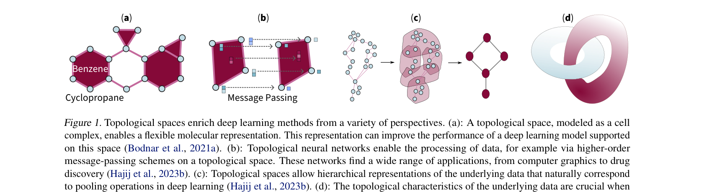

리뷰 ▷ TDL은 관계형 학습의 새로운 프런티어
@inproceedings{papamarkou2024position,
title={Position: Topological Deep Learning is the New Frontier for Relational Learning},
author={Papamarkou, Theodore and Birdal, Tolga and Bronstein, Michael and Carlsson, Gunnar and Curry, Justin and Gao, Yue and Hajij, Mustafa and Kwitt, Roland and Li{\`o}, Pietro and Di Lorenzo, Paolo and others},
booktitle={International Conference on Machine Learning (ICML)},
year={2024}
}Theodore Papamarkou\(^1\) Tolga Birdal\(^2\) Michael Bronstein\(^3\) Gunnar Carlsson\(^{4,5}\) Justin Curry\(^6\) Yue Gao\(^7\) Mustafa Hajij\(^8\) Roland Kwitt\(^9\) Pietro Liò\(^{10}\) Paolo Di Lorenzo\(^{11}\) Vasileios Maroulas\(^{12}\) Nina Miolane\(^{13}\) Farzana Nasrin\(^{14}\) Karthikeyan Natesan Ramamurthy\(^{15}\) Bastian Rieck\(^{16,17}\) Simone Scardapane\(^{11}\) Michael T. Schaub\(^{18}\) Petar Veličković\(^{19,10}\) Bei Wang\(^{20}\) Yusu Wang\(^{21}\) Guo-Wei Wei\(^{22}\) Ghada Zamzmi\(^{23}\)
초록
위상 심층학습(Topological deep learning, TDL)은 위상적 특징을 활용하여 심층학습 모델을 이해하고 설계하는 빠르게 발전하는 분야이다. 본 논문은 TDL이 관계형 학습(relational learning)의 새로운 프런티어(new frontier)라고 주장한다. TDL은 그래프 표현 학습과 기하 심층학습을 위상적 개념의 도입을 통해 보완할 수 있으며, 따라서 다양한 기계학습 환경에서 자연스러운 선택지를 제공할 수 있다. 이를 위해 본 논문은 실용적 이점에서부터 이론적 토대에 이르기까지 TDL의 열린 문제들(open problems)을 논의한다. 각 문제에 대해 잠재적 해결 방안과 향후 연구 기회를 제시한다. 동시에, 본 논문은 과학 커뮤니티가 TDL 연구에 적극적으로 참여하여 이 신흥 분야의 잠재력을 해방시키도록 초대하는 역할을 한다.
1. 서론
전통적인 기계학습은 관심 대상이 되는 관측 데이터가 선형 벡터 공간 위에 존재하며 특징 벡터들의 집합으로 기술될 수 있다고 종종 가정한다. 그러나 많은 경우 이 관점이 현실 세계의 여러 데이터를 기술하기에 불충분하다는 인식이 커지고 있다. 예를 들어 분자(molecule)는 특징 벡터보다는 그래프로 표현하는 것이 더 적절할 수 있다. 다른 예로는 컴퓨터 그래픽스와 기하 처리(geometric processing)에서 나타나는 메시(mesh)로 표현된 3차원 객체, 또는 상호 연결된 행위자들의 복잡한 소셜 네트워크 위에 존재하는 데이터가 있다. 따라서 이러한 유형의 데이터에 대한 통찰을 체계적으로 얻기 위해 기하와 위상의 개념을 일반적인 기계학습 파이프라인에 도입하려는 관심이 증가하고 있다.
이 연구 방향의 가장 두드러진 갈래 중 하나는 기하 심층학습(geometric deep learning, GDL)이다 (Bronstein et al., 2021; Zhou et al., 2020; Wu et al., 2020; Nguyen & Wei, 2019). GDL은 신경망을 다양체(manifold)와 그래프를 포함한 비유클리드 도메인으로 일반화하는 것을 목표로 한다. 그래프 신경망(Graph neural networks, GNNs)은 GDL 내에서 핵심적인 축을 이룬다 (Wu et al., 2020; Zhou et al., 2020).
위상수학(topology)은 연속 변형 하에서 불변하는 성질을 연구하는 분야이며, 이를 통해 데이터의 전역 구조를 파악할 수 있는 강력한 렌즈를 제공한다. 여러 스케일에 걸친 연결 성분, 루프, 보이드(void)를 비롯한 위상적 특징을 특성화함으로써, 퍼시스턴트 호몰로지(persistent homology)와 같은 위상적 도구들은 (Carlsson, 2009; Edelsbrunner & Harer, 2010) 기존 방법이 놓치는 본질적 구조와 패턴을 포착하는 강력한 수단이 되었다. 데이터의 위상적 시그니처(topological signature)를 정량화하는 능력은 전통적 기계학습 모델의 강건성을 향상시켜 다양하고 복잡한 데이터셋에서 더 많은 종류의 의미 있는 구조를 식별할 수 있게 한다. 위상적 데이터 분석(topological data analysis, TDA)이라는 우산 아래에서 전개되는 이러한 위상적 아이디어의 활용은 이미 잘 정립된 연구 분야이다. 예를 들어 퍼시스턴트 호몰로지는 컴퓨터 지원 약물 설계 분야의 세계적 경쟁 시리즈인 D3R Grand Challenges에서 성공을 이끈 바 있다 (Nguyen et al., 2019; 2020).

Figure 1. 위상 공간은 심층학습 방법을 다양한 관점에서 풍부하게 한다. (a): 셀 복합체(cell complex)로 모델링된 위상 공간은 유연한 분자 표현을 가능하게 한다. 이 표현은 해당 공간 위에서 동작하는 심층학습 모델의 성능을 향상시킬 수 있다 (Bodnar et al., 2021a). (b): 위상 신경망(topological neural networks)은 예를 들어 위상 공간 위에서의 고차 메시지 전달(higher-order message-passing) 방식을 통해 데이터 처리를 가능하게 한다. 이러한 신경망은 컴퓨터 그래픽스에서 약물 발견에 이르기까지 폭넓은 응용을 갖는다 (Hajij et al., 2023b). (c): 위상 공간은 기저 데이터의 계층적 표현을 허용하며, 이는 심층학습에서의 풀링 연산과 자연스럽게 대응한다 (Hajij et al., 2023b). (d): 기저 데이터의 위상적 특성은 신경망 아키텍처를 선택할 때 중요하다. 그림에 나타난 것과 같이 \(\mathbb{R}^3\)의 매듭 구조(knotted structure)에서 얻은 데이터는 \(\mathbb{R}^3\)에서 \(\mathbb{R}^2\)로 가는 단일 은닉층 다층 퍼셉트론(multilayer perceptron, MLP)으로는 \(\mathbb{R}^2\)에 임베딩될 수 없다 (Olah, 2014).
또한, 등고선 트리(contour trees), 병합 트리(merge trees), Reeb 그래프, 매퍼(mapper), Morse 및 Morse–Smale 복합체와 같은 위상적 기술자(topological descriptor)들은 과학 데이터 분석과 시각화 분야에서 잘 정립된 도구이다 (Banerjee et al., 2020; Hu et al., 2021b).
다양한 위상 구조는 데이터를 고차 관계(higher-order relations) 측면에서 기술하기 위한 모델로 사용되어 왔으며, 여기에는 셀 복합체 (Hajij et al., 2020), 단체 복합체(simplicial complexes) (Schaub et al., 2022), 층(sheaves) (Hansen & Ghrist, 2019), 조합적 복합체(combinatorial complexes) (Hajij et al., 2023b)가 포함된다. 최근에는 이러한 위상적 도메인 위에 존재하는 데이터로부터 학습하도록 기계학습 모델이 설계되어 왔다 (Bodnar et al., 2019; Bunch et al., 2020; Hajij et al., 2020; Schaub et al., 2020; Roddenberry et al., 2021; 2022; Schaub et al., 2021; Giusti et al., 2023; Yang & Isufi, 2023).
위상적 특징을 데이터를 기술하는 데 사용하는 것을 넘어서, 위상적 특징을 계산 모델을 이해하고 제어하는 데에도 활용할 수 있다. 다시 말해, 신경망과 같은 계산 모델 내에서의 정보 흐름을 이해하여 모델의 기능적 동작에 대한 통찰을 얻는 데 위상적 방법을 사용할 수 있다. 나아가 특정 위상적 개념에 따라 심층학습 아키텍처를 설계할 수 있는데, 예를 들어 특정 위상 불변량(topological invariant)을 준수하는 메시지 전달 방식을 강제하거나 학습된 표현의 바람직한 위상적 성질을 촉진함으로써 수행 가능한 연산의 종류를 확장하거나 제약할 수 있다.
앞서 설명한 위상 개념을 기계학습에 통합하는 세 가지 방식 사이에는 중복이 있지만, 본 논문은 주로 뒤쪽 두 관점에 초점을 맞춘다. 이 두 관점은 기계학습 응용에 큰 잠재력을 가지면서도 아직 충분히 정립되지 않았다. 또한 ‘전통적’ TDA (Edelsbrunner & Harer, 2010; Carlsson, 2009; Dey & Wang, 2022; Ghrist, 2014)와 대조적으로, 본 논의는 현실 세계에서의 광범위한 채택으로 인해 심층학습 모델에 특히 주목한다. 이러한 맥락에서 본 논문은 위상 심층학습(topological deep learning, TDL)이라는 신생 분야에 전적으로 할애되며, 열린 문제를 부각시키고 향후 연구 기회를 식별한다. 이러한 방식으로 본 논문은 TDL 연구에 기여해 달라는 과학 커뮤니티에 대한 초대의 역할을 한다.
왜 TDL인가? 관계형 데이터의 인코딩, 모델링, 분석에서 TDL이 결정적 역할을 하는 이유를 설명하기 위해 TDL의 네 가지 실용적 이점을 제시한다. 첫째, 기저 데이터 공간의 위상은 가능한 신경망 아키텍처의 선택을 결정한다. 둘째, 위상적 도메인은 다중 관계(multi-way interactions, 고차 관계라고도 함)를 포함하는 데이터의 모델링을 가능하게 한다. 셋째, TDL은 ‘재정규화 대칭성’(renormalizing symmetry)과 같이 다양체에 내재된 규칙성을 포착한다. 넷째, TDL은 데이터의 위상적 등변성(topological equivariances)을 포착한다. 요약하면, TDL은 관계형 데이터에 나타나는 위상적 특성을 고려하므로 다양한 기계학습 문제에 대한 자연스러운 선택이다. Figure 1은 위상적 심층학습 접근이 유용하며 때로는 결정적인 예시들을 보여준다.
신경망 아키텍처의 선택. Olah (2014)는 TDL에 관한 초기 연구 중 하나에 기여했으며, 신경망 아키텍처를 선택할 때 기저 공간의 위상이 고려되어야 함을 보였다. 초기에는 ’TDL’이라는 용어가 심층 신경망(deep neural network, DNN)의 입력 파이프라인에 퍼시스턴트 호몰로지로 생성된 특징을 도입하는 것을 의미하는 용어로 종종 사용되었다 (Cang & Wei, 2017; Hofer et al., 2017). 그러나 본 논문은 ’TDL’이라는 용어를 심층학습에서 위상적 개념의 사용과 관련된 아이디어와 방법 전체를 지칭하는 데 사용한다. Hensel et al. (2021)에 따라, TDL 방법은 관측적(observational) 방식으로 사용되어 기존 심층학습 모델과 그 위상적 정식화에 대한 이해를 개선하거나, 개입적(interventional) 방식으로 사용되어 심층학습 아키텍처가 셀 복합체 (Hajij et al., 2020; Bodnar et al., 2022; Giusti et al., 2023), 단체 복합체 (Bodnar, 2022; Schaub et al., 2022; Mitchell et al., 2024), 층 (Hansen & Ghrist, 2019; Bodnar et al., 2021b), 조합적 복합체 (Hajij et al., 2023b), 하이퍼그래프 (Feng et al., 2019; Kim et al., 2020; Bai et al., 2021b; Behrouz et al., 2023)와 같은 고차 도메인 위에 존재하는 데이터를 처리할 수 있게 한다.
다중 관계. TDL에서 다중 관계는 많은 실제 응용에서 상당한 이점을 제공하는 학습 가능한 고차 구조를 인코딩하는 데 사용된다. 엣지별 메시지 전달에 기반하는 GNN과 대비하여, 고차 관계는 단체(simplex), 셀(cell), 하이퍼엣지(hyperedge)와 같은 확장된 구조로 부호화되며, 고차 메시지 전달 방식을 사용하여 관계형 데이터에 존재하는 긴 범위 또는 엣지에 의해 포착되지 않는 상호작용을 효과적으로 처리한다 (Hajij et al., 2020; Roddenberry et al., 2021; Bodnar, 2022; Hajij et al., 2023b; Yang & Isufi, 2023). 한편 그래프 기반 등변 신경망은 신경망에 다중 관계의 고차 상호작용을 통합하도록 확장되어 왔으며 (Batatia et al., 2022; Musaelian et al., 2023), 다양한 유형의 다중 관계 상호작용이 실전에서 발생할 수 있다. TDL은 위상적 도메인에서 정의된 고차 상호작용에 기반하는 풍부한 도구 집합을 제공한다.
다양체에 내재된 규칙성. 고차 관계를 넘어서, TDL은 또한 다양체의 규칙성을 포착하는 능력을 제공한다. 예시로는 재정규화 대칭성 — 다양체 위에서 정의된 대상이 정칙화 분해능을 도입함으로써 유도될 수 있는 대칭성 — 이 있다. 이러한 규칙성은 상이한 메싱 분해능에서도 정의 가능한 기하 심층학습을 통해서만 부분적으로 다루어진다. 이에 반해 TDL은 규칙성을 공리(axiom)로 삼아 (혹은 심지어 귀납적 편향으로도) 상이한 위상적 도메인에 걸쳐 정의되어야 하는 풍부한 도구 집합을 제공한다.
위상적 등변성. TDL은 ‘위상적 등변성’을 포착하는 자연스러운 접근이다. 예를 들어, 어떤 분류 알고리즘이 보완의 위상을 식별하려는 목적을 가진다면, 그것은 보완의 안정자 그룹(stabilizer group) 관점에서 불변성을 유지하는 것이 유용하다. 일반적으로 GNN과 GDL은 ’표준 그룹’ 위에서 기반한다. 예를 들어 GNN은 순열 그룹을 채택하고, GDL 응용은 유클리드 그룹, 예컨대 특수 유클리드 그룹 \(SE(n)\)이나 특수 직교 그룹 \(SO(n)\)을 채택한다. TDL은 순열 그룹을 넘어서 주어진 집합 위에 작용하는 더 복잡한 준동형 그룹을 포함하며, 이는 셀, 단체, 하이퍼엣지와 같은 구조 집합 위에서 자연스럽게 정의되므로, 학습된 표현의 바람직한 위상 성질의 모형화를 증진시킬 수 있다.
앞서 설명한 세 가지 TDL 도입 방식 사이에는 중복이 있음에도 불구하고, 본 논문은 주로 기계학습 응용에 큰 가능성이 있으며 아직 TDL 공식화 이외에는 깊이 연구되지 않은 경우에 초점을 맞춘다.
논문 구조. 본 논문의 나머지는 특정 TDL 관련 공개 문제와 잠재적 해결 및 예제 응용 영역에 대한 논의를 담은 섹션으로 구성된다. 섹션들은 실용적인 응용 중심 내용으로 시작하여 이론적 토대로 마무리된다. 부록 A에 관심 있는 독자를 위한 TDL에 대한 포괄적인 리뷰를 포함한다.
2. 예시, 데이터셋 및 벤치마크
이 섹션에서는 관계형 학습에서 TDL 응용과 성공 사례를 부각시키고, TDL이 다양한 환경에서 가지는 이점을 논의한다. 또한 고차 데이터셋과 벤치마크의 가용성의 틈을 식별하는 것 또한 목표이다.
2.1. 예시
TDL의 자연스러운 활용 사례는 위상적 정보를 포함하는 속성 그래프(attributed graph)를 결합하는 것이다. 이러한 그래프는 화학, 약리학, 생물학 등 수많은 도메인에서 나타난다. 예를 들어, 분자의 그래프 표현 (Xia & Wei, 2014; Swenson et al., 2021), 약물 설계 (Cang & Wei, 2017), 바이러스 분석 (Jiang et al., 2023), 분자의 구조적 표현 (Reiser et al., 2022; Townsend et al., 2020) 등이다. 그러나 고차 관계가 복잡한 데이터 세트로부터 위상적 특징을 필요로 하는 응용은 생물학 (Cang et al., 2018)에도 있다. 아마도 TDL 응용의 가장 설득력 있는 예시는 D3R Grand Challenges (Nguyen et al., 2019; 2020)에서 TDL 사용에서의 뛰어난 이점을 가장 설득력 있게 보여준 약물 발견과 SARS-CoV-2 진화 메커니즘 발견 (Chen et al., 2020; Wang et al., 2021), 그리고 BA.2 변이 (Chen & Wei, 2022), BA.4 및 BA.5 (Chen et al., 2022)의 약 2개월 전 성공적 예측이다. 보다 넓게는, 그래프 중심의 응용 외에도 다른 응용 분야에서 기계학습의 위상적 관점으로 혜택을 얻어왔으며, 여기에는 2D 형상 분석, 비지도 학습 (Hofer et al., 2019), 분류 (Chen et al., 2019; Hofer et al., 2020a; Curry et al., 2023)가 포함된다.
Open problem 1. TDL의 설득력 있는 응용은 데이터의 위상적 성질이 경쟁력 있는 우위를 실증적으로 입증하는 방식으로 개발되어 왔다. 그러나 관계형 학습에 혁신을 가져올 수 있는 더 폭넓은 TDL 채택은 아직 실제 응용 분야에서 이루어지지 않았다.
여러 응용 영역이 TDL이 빛을 발할 만한 후보이다. 이들 영역의 기저 도메인이 위상적 구조를 발생시키기 때문이다. 실전에서 TDL의 개발과 채택을 장려하기 위해, 수많은 과학 분야에서의 TDL 응용의 존재 또는 출현을 부록 B에서 더 상세히 다룬다.
Research direction 1. 위상적 구조는 데이터 압축, 자연어 처리(natural language processing, NLP), 컴퓨터 비전 및 컴퓨터 그래픽스, 화학, 생물 영상, 바이러스 진화, 약물 설계, 신경과학, 단백질 공학, 칩 설계, 의미 통신(semantic communications), 위성 영상, 재료과학 등 여러 과학 분야에서 나타난다. 현실 세계에 영향을 미치는 TDL 응용을 개발하기 위해 이들 과학 분야 연구자들과의 협력이 장려된다.
2.2. 데이터셋
TDL의 실용적 이점을 부각시키는 것 외에도, 응용은 TDL 모델의 개발과 배포에 중요한 역할을 할 수 있다. 특히, 응용으로부터 파생된 표준화된 데이터셋은 TDL 연구를 견인하는 데 핵심적이다. 벤치마크 데이터셋 모음인 Open Graph Benchmark는 재현 가능한 그래프 기계학습 연구를 촉진하기 위해 개발되었다 (Hu et al., 2020; 2021a). 그러나 커뮤니티는 아직 고차 데이터를 구축하고 관련 벤치마크를 구성하기 위한 자원 투입에 소극적이다. 왜냐하면 많은 그래프 방법은 이러한 정보를 활용하지 않기 때문이다.
Open problem 2. 고차 데이터가 부족하다. TDL의 발전을 위한 주요 이정표 중 하나는 공개 고차 데이터셋의 풍부한 생성이다.
고차 데이터는 수집되거나 합성될 수 있다. 2.1절의 TDL 응용 영역은 고차 데이터를 수집하기 위한 잠재적 후보이다. 이러한 데이터의 예는 고차 도메인으로 리프팅될 수 있다 (Papillon et al., 2023a). 그래프에 대한 리프팅 절차는 합성 위상 데이터의 생성 메커니즘을 제공한다. 이러한 까닭에 리프팅 절차와 관련 메시지 전달 방식에 대한 조사가 TDL에 유용할 것이다. 또한, 그래프 재배선(graph-rewiring) 접근과 분석을 고차 위상 구조로 일반화하는 것은 생산적인 방향이 될 것이다.
Research direction 2. TDL의 응용 개발은 기저 도메인에서 자연스럽게 발생하는 고차 데이터셋을 생산할 수 있다. 그래프 리프팅 및 재배선 알고리즘의 체계적 평가와 일반화는 합성 고차 데이터셋으로 나아가는 타당한 경로이다.
2.3. 벤치마크
고차 데이터셋 모음의 큐레이션은 TDL 벤치마크를 위한 길을 열 수 있다. 벤치마킹은 새로운 TDL 아키텍처와 관련 학습 알고리즘의 비교 평가 및 개발에 필수적이다.
Open problem 3. 새로운 TDL 연구의 효율적이고 객관적인 평가를 가능하게 하려면 벤치마크 스위트(benchmark suite)가 필요하다.
TDL을 위한 오픈소스이자 재현 가능한 벤치마크 스위트의 설계는 최소한의 고차 벤치마크 데이터셋 집합과 더불어 고차 도메인에서 합성 데이터셋을 생성하기 위한 그래프 리프팅 알고리즘의 구현을 필요로 한다. 사용자 경험을 용이하게 하기 위해, 고차 데이터셋의 분류 체계(taxonomy)를 갖추는 것이 권장되는 기능이며, 예를 들어 데이터셋 크기와 학습 과제 유형별로 벤치마크를 조직화한다. TDL 벤치마크 스위트는 예측 성능을 넘어서는 포괄적 성능 메트릭 집합을 갖출 것으로 기대된다. 예를 들어, 안정성 메트릭은 TDL과 관련이 있는데, 데이터에 내재한 위상적 구조의 활용이 GNN 대비 안정성을 개선할 것으로 예상되기 때문이다.
Research direction 3. TDL 벤치마크 스위트의 기본 구성 요소에는 고차 데이터셋, 그래프 리프팅 알고리즘, 예측 및 안정성 메트릭이 포함된다.
3. 소프트웨어
NetworkX (Hagberg et al., 2008), KarateClub (Rozemberczki et al., 2020), PyG (Fey & Lenssen, 2019), DGL (Wang et al., 2019)과 같이 여러 그래프 기반 학습 소프트웨어 패키지가 존재한다. NetworkX는 그래프 연산을 지원하고, KarateClub은 그래프 구조 데이터에 대한 비지도 학습 알고리즘을 구현한다. PyG와 DGL은 그래프를 위한 두 가지 기하 심층학습 패키지이다.
저자들이 아는 한, 고차 구조에 대한 기능을 제공하는 소프트웨어 패키지는 네 가지, 즉 HyperNetX (Liu et al., 2021), XGI (Landry et al., 2023), DHG (Feng et al., 2019), TopoX (Hajij et al., 2024)이다. HyperNetX는 하이퍼그래프에 대한 연산을 허용하고, XGI는 하이퍼그래프와 단체 복합체에 대해 유사한 기능을 제공한다. DHG는 그래프와 하이퍼그래프를 위한 심층학습 패키지이다. TopoX는 위상 신경망에 대한 계산과 학습을 위해 설계된 Python 패키지 모음이다. 이 모음은 TopoNetX, TopoEmbedX, TopoModelX 세 패키지로 구성된다. TopoNetX는 색상 하이퍼그래프(colored hypergraphs), 단체 복합체, 셀 복합체, 경로 복합체(path complexes), 조합적 복합체를 포함한 그래프와 고차 도메인에 대한 연산을 지원한다. TopoEmbedX는 고차 도메인을 유클리드 도메인으로 임베딩하는 방법을 제공한다. TopoModelX는 Papillon et al. (2023a)에서 조사된 위상 신경망의 대부분을 구현한다.
pytorch-topological은 giotto-tda (Tauzin et al., 2021)와 Higra (Bauer, 2021)를 포함하여 TDA를 위한 여러 최신 패키지를 결합하며, 점군(point cloud)이나 이미지와 같은 구조화 데이터에 작동하는 위상 기반 알고리즘의 생성을 가능하게 한다. 유사하게 torch-ph (Pérez et al., 2021)와 TopologyLayer (Gabrielsson et al., 2020)는 퍼시스턴트 호몰로지 계산을 지원하며, 이러한 계산을 통한 미분화(differentiation) 역시 지원하여 위상 정보 기반의 손실 함수 개발을 용이하게 한다.
그러나, 이론적 발전에도 불구하고 TDL의 실무적 실험과 배포는 제한적인 소프트웨어 가용성으로 인해 종종 방해받는다. 예를 들어, 안정적이고 사용자 친화적인 TDL 소프트웨어 패키지가 고차 도메인을 지원하는 데 여전히 필요하며, 여기에는 고차 다중 네트워크(higher-order multiplex networks)와 기존 고차 도메인의 동적 판 같은 도메인, 그래프 리프팅 및 재배선 알고리즘, TDL 모델, 학습 알고리즘 (Alon et al., 2023)이 포함된다.
Open problem 4. TDL 모델의 연구 실험과 배포는 소프트웨어의 제한된 가용성으로 인해 종종 방해받는다. TDL을 위한 소프트웨어 개발은 TDL의 이론적·공학적 연구 진행을 가속화하는 데 있어 가장 시급한 열린 문제 중 하나이다.
TDL 소프트웨어의 개발을 가속화하기 위해서는 더 많은 인력과 재정적 투자가 필요하다. 현재 이용 가능한 TDL 소프트웨어 패키지는 오픈소스이므로, 이러한 패키지를 개선하기 위해 자원봉사로 참여하는 소프트웨어 엔지니어와 연구자들이 있다. 코딩 챌린지 (Papillon et al., 2023a)는 이 방향에 도움이 된다. 그러나 더 많은 프로그래머가 필요하다. 학술 연구 지원금은 컴퓨터 과학자들이 TDL 소프트웨어 개발에 기여할 수 있는 하나의 자금 경로이다. 투자자로부터 재정 자원을 유치하려면, TDL의 가치를 입증할 것이 기대된다. 다시 말해, Open problem 1 (TDL의 설득력 있는 예시)을 해결하는 것이 Open problem 4 (TDL 소프트웨어 개발 자원)를 해결할 여건을 조성한다.
트랜스포머는 그래프 처리 영역에서 구현이 쉬워 인기가 있다. 기존 TDL 방법이 트랜스포머보다 구현하기 더 어려울 수 있으므로, 소프트웨어 사용자들은 위상적 인코딩을 장착한 트랜스포머에 의지할 수 있다. 이러한 가능성은 TDL 연구의 대안적 방향을 제공한다. TDL 알고리즘의 계산적 트레이드오프와 하드웨어 친화성을 이해하는 것이 TDL 소프트웨어의 개발과 폭넓은 채택을 이끄는 데 결정적으로 중요해진다. 하드웨어 친화적 TDL 구현을 향한 진전에는, 예를 들어 그래프 재배선 (Topping et al., 2022; Nguyen et al., 2023)과 위치 인코딩 (Wang et al., 2022)이 포함될 수 있다.
Research direction 4. TDL 소프트웨어 개발을 발전시키려면 더 많은 자원의 확보가 필요하다. 또한, TDL 알고리즘의 계산적 트레이드오프와 하드웨어 친화성에 대한 연구는 더 접근 가능한 TDL 소프트웨어 구현을 낳을 수 있다.
4. 복잡도와 확장성
TDL을 위한 소프트웨어 개발이 하나의 문제라면, 또 다른 임박한 물음은 TDL의 이점이 수반되는 비용을 상회하는지이다. TDL 아키텍처의 혁신적 설계는 실용적 응용에서 차이를 만들 수 있다. 이러한 응용의 맥락에서, 계산 복잡도와 확장성은 TDL이 고차 데이터를 포함함으로 인해 특히 두드러지게 나타나는 주요 과제이다. 이 섹션은 TDL의 복잡도 및 확장성 영향을 논의한다.
4.1. 복잡도
TDL 모델은 GNN과 비교하여 공간 및 시간 복잡도를 증가시킨다. 이는 전자가 부가적인 고차 구조를 갖는 도메인에서 작동하기 때문이다. 따라서 질문은 TDL의 증가된 복잡도가 가치가 있는지 여부이다.
Open problem 5. TDL을 위한 비용-편익 분석 프레임워크는 공식화되지 않았다. (고차 데이터의 포함으로 인한) GDL 및 GRL 대비 TDL의 증가된 시간 및 공간 복잡도는 TDL, GDL, GRL 중에서 선택할 때 체계적으로 고려되어야 정보에 입각한 의사결정을 가능하게 한다.
TDL에서 복잡도의 역할을 이해하는 한 접근은, 복잡도와 성능 사이의 트레이드오프를 고차 구조의 함수로서 분석하는 것이다. 예를 들어, TDL 알고리즘의 효율은 고차 특징 포함을 통한 예측 성능 증가와 신경망 학습의 계산 비용 증가를 연결함으로써 평가될 수 있다.
TDL에서 복잡도 개념을 분석하는 또 다른 접근은 위상적 정보가 신경망 층을 통해 전파되는 과정을 연구하는 것이다. 예를 들어 Naitzat et al. (2020)은 신경망이 층을 통과하면서 위상적으로 복잡한 입력 데이터를 위상적으로 더 단순한 형태로 변환한다는 점을 보였다. Petri & Leitão (2020)은 Naitzat et al. (2020)의 연구를 확장하여, 단순화되는 것이 반드시 데이터의 위상은 아니며 오히려 결정 경계의 위상임을 보였다. Wheeler et al. (2021)은 심층 신경망의 연속된 층을 통과하면서 데이터의 퍼시스턴스 호몰로지가 어떻게 변환되는지를 연구하였다. Naitzat et al. (2020), Petri & Leitão (2020), Wheeler et al. (2021)이 고차 구조 위에 존재하는 입력 데이터에 초점을 맞추지는 않지만, 이러한 연구들은 예를 들어 데이터의 기저 위상의 층별 변환을 통해 위상적 복잡도를 특성화하는 유력한 방법을 제공한다.
Research direction 5. TDL의 복잡도는 고차 (대수적) 구조에 의존하는 성능-복잡도 트레이드오프의 관점에서, 또는 신경망 층을 통한 위상적 정보 전파의 관점에서 공식화될 수 있다.
4.2. 확장성
제한된 소프트웨어 가용성 (Open problem 4)만이 TDL 개발의 유일한 과제는 아니다. 확장성의 부족은 TDL의 진전을 저해한다. 뿐만 아니라, 다수의 고차 도메인은 확장 가능한 TDL 모델과 학습 알고리즘의 상호 운용성을 제한한다. 예를 들어, 단체 복합체에 대해 확장 가능한 TDL 모델이 개발된다 하더라도 셀 복합체, 하이퍼그래프, 경로 복합체와 같은 다른 고차 도메인에는 적용되지 않을 것이다.
Open problem 6. 다중 고차 도메인에 걸쳐 작동하는 확장 가능한 TDL 모델을 구축하는 것은 여전히 열린 문제로 남아 있다.
자원 효율적인 TDL 모델을 구축하는 한 가지 방법은 더 적은 데이터 포인트로부터 더 많은 정보를 활용하거나, 고차 도메인에서 증명 가능하게 더 빠르게 수렴하는 최적화 알고리즘을 개발하는 것이다. TDA 응용에서 성능 개선을 보인 또 다른 방향은 서브샘플링 (subsampling)을 포함한다 (Moor et al., 2020; Wagner et al., 2021).
분산 학습은 확장 가능한 TDL을 위한 또 다른 유력한 경로로 부상한다. 그래프에 대한 메시지 전달 방식은 ’메시지’를 별개의 노드를 통해 이동시킴으로써 자연스럽게 분산 학습 알고리즘으로 이어진다. 예를 들어 Scardapane et al. (2021)은 분산 GNN 학습을 위한 프레임워크를 도입하였다. 한 가지 가능성은 Scardapane et al. (2021)의 연구를 분산 TDL로 확장하는 것이다.
Research direction 6. 분산 GNN 학습의 기존 결과를 확장하는 것은 TDL 모델의 확장 가능한 학습으로 이어지는 길을 열 수 있다.
5. 설명 가능성, 일반화, 공정성
이 섹션은 설명 가능성, 일반화, 공정성의 문제에 초점을 맞춘다. 이러한 문제는 기계학습에서 흔하며 다른 맥락에서는 탐구되어 왔지만, TDL의 맥락에서 어떻게 번역될 수 있는지는 대체로 탐구되지 않았다. 이 섹션은 TDL이 이러한 문제를 해결하는 데 중요한 역할을 할 수 있는 방법을 논의한다.
5.1. 설명 가능성과 일반화
심층 학습을 이해하는 것은 현저히 어려운 과제이며 커뮤니티의 주요 관심사 중 하나이다. 한 가지 질문은 위상이 신경망 가중치, 결정, 학습 메커니즘의 설명 가능성과 일반화 오차의 특성화를 포함하여 심층학습 이해에 어떻게 기여할 수 있는가이다.
Open problem 7. 심층학습의 설명 가능성과 일반화에 관한 문제를 다루기 위해 위상을 활용하는 것은 열린 문제의 한 계열을 형성한다.
최근 결과는 데이터의 위상, 학습 궤적, 신경망 가중치 및 내부 표현이 심층학습의 일반화 오차와 관련 있음을 보였다 (Rieck et al., 2019b; Hofer et al., 2020a; Birdal et al., 2021; Andreeva et al., 2023; Dupuis et al., 2023). 이러한 맥락에서, 일반화 오차를 예측하기 위한 실현 가능한 연구 시도로는 계산 그래프, 신경망의 학습 궤적에 대한 TDL 모델 학습, 또는 일반화와 연결된 내부 표현의 바람직한 위상적 성질을 촉진하는 것이 있다. 이러한 방향에서의 어떠한 진전도 TDL이 근본적인 심층학습 연구에 미치는 잠재적 영향을 고려할 때 TDL에 더 큰 주목을 끌 것이다.
Research direction 7. 계산 그래프에 대한 TDL 모델 학습, 신경망의 확률적 최적화 과정에서 추적되는 가중치 궤적의 위상적 성질 제어, 또는 데이터에 대한 신경망의 내부 표현에 바람직한 위상적 성질을 적절히 강제하는 것은 심층학습에서 수수께끼 같은 일반화 행태를 이해하고 설명 가능한 AI에 한 걸음 더 다가가는 열쇠가 될 수 있다.
5.2. 공정성
설명 가능성과 일반화 외에도, GDL에서 TDL로 아직 확장되지 않은 다른 주제들이 있으며, 모델 공정성 (Spinelli et al., 2021)과 적대적 공격 (Zheng et al., 2021; Zhou et al., 2023)이 그 예이다. 이를 위해, 적어도 두 가지 쟁점이 다루어져야 하는데, 즉 유효한 공정성 메트릭의 정의와 그래프 샘플링 또는 재배선 알고리즘의 개발이다.
Open problem 8. TDL 모델 공정성은 충분히 연구되지 않았다.
그래프에서 공정성은 예를 들어, 클래스 간 엣지 대 클래스 내 엣지의 비율을 세는 동질성 (homophily)을 사용하여 정량화될 수 있다. Telyatnikov et al. (2023)은 동질성 측도를 하이퍼그래프로 확장하는 방법을 제안했다. Telyatnikov et al. (2023)의 연구를 변용함으로써, 동질성 개념은 하이퍼엣지를 넘어서 다른 고차 특징으로 확장될 수 있다. 고차 구조에서의 편향은 분류적 혼합 계수 (assortative mixing coefficient) (Newman, 2003)를 그래프 너머로 일반화함으로써 평가될 수 있다. 또한, 불균형 영향(disparate impact) (Laclau et al., 2021)과 통계적 평등(statistical parity) (Rahman et al., 2019)과 같은 그래프에 대한 이원 공정성 메트릭은 고차 구조에 대한 다원 공정성 메트릭으로 확장될 수 있다.
Research direction 8. 공정한 TDL 모델을 구축하기 위해, 동질성, 분류적 혼합, 이원 공정성 같은 그래프에 대한 기존 공정성 개념은 고차 구조에 대해 일반화될 수 있다.
6. 이론적 기반
이 섹션은 TDL의 이론적 기반에 전념한다. TDL의 이점, 위상적 표현 학습 (topological representation learning, TRL), TDL에서의 트랜스포머에 관한 열린 문제와 관련 연구 방향에 초점을 맞춘다.
6.1. 위상 심층학습의 이점
심층학습에서 위상은 왜 중요한가? 이 질문에 답하는 첫 걸음은 TDL이 어떤 측면에서 전통적인 학습 방법을 능가하는 경험적으로 검증 가능한 예시를 개발함으로써 이미 시작되었다 (또한 Open problem 1 참조). 이러한 가능한 실증적 발견을 검증하려면 이론적 답변의 정립이 필요하다. 이론은 심층학습에서 위상의 관련성을 어떻게 정당화할 수 있는가? 이론은 고차 도메인이 벡터 공간보다 더 풍부한 표현을 제공한다는 것을 증명 (또는 반증) 할 수 있는가?
고차 관계는 언제 유용해지는가? 고차 관계가 모든 응용에 이익이 되지는 않을 수 있다. 고차 관계가 유용해지는 맥락을 발견하는 것이 가능한가 (Battiston et al., 2020; Benson et al., 2021; Bick et al., 2023)? 개선된 다운스트림 성능으로 이어지는 고차 관계를 명확히 지적할 수 있는가? 일단 발견되면, 이러한 관계가 의미 있게 유효한지 보증할 수 있는가? 시각적 도구나 의미론적 메트릭을 사용하여 고차 관계로부터 물리적 또는 생물학적 관련성을 끌어낼 수 있는가? 고차 관계가 과학자들이 현재 불분명한 현상을 이해하는 데 도움이 될 수 있는가?
TDL이 GRL에 대해 갖는 이점은 무엇인가? 한 질문은 특정 경우에 고차 관계가 필요하지 않고 일반적인 GNN에 더 많은 층을 쌓거나 그래프 트랜스포머 네트워크 (Yun et al., 2019)를 사용함으로써 동일한 성능을 달성할 수 있는지 여부이다. 이는 잠재적으로 발생할 수 있지만, 신경망 아키텍처 설계가 (특히 저데이터 체제에서) 고차 관계를 포착하는 것과 관련하여 중요하다는 점은 알려져 있다. 예를 들어 Sanford et al. (2023)의 연구는 기존 트랜스포머가 쌍별 관계 모델링에는 효율적이지만 3자 관계 모델링에는 그렇지 않음을 시사한다. 또한, TDL은 소실 기울기(vanishing gradients) 및 성능 저하와 같이 더 깊은 GNN에서 발생하는 일반적인 병적 현상의 일부를 회피하는 데 도움이 될 수 있다.
Open problem 9. TDL의 상대적 이점을 공고히 하기 위한 이론적 토대는 아직 충분히 마련되지 않았다. 심층학습에서 위상의 관련성과 고차 관계로 얻는 다운스트림 성능의 맥락적 이해를 밝히기 위해 더 많은 이론적 연구가 필요하다.
TDL의 표현력 증명. 일부 GNN과 데이터셋에 대해, 퍼시스턴트 호몰로지가 GNN을 이론적으로도 실증적으로도 능가한다는 것이 알려져 있다 (Horn et al., 2022). 두 개의 연결 성분 또는 두 개의 사이클을 가지는 그래프는 통상적인 Weisfeiler–Lehman 그래프 동형성 검정으로 구별할 수 없고, 따라서 메시지 전달 GNN으로도 구별할 수 없다. 또한, 고차 메시지 전달의 증가된 표현력은 증명되었다 (Bodnar et al., 2021a). 표현력 증명은 심층학습에서 위상의 관련성을 규명하는 메커니즘을 제공한다. 예를 들어, DNN이나 GNN이 특정 위상 불변량을 학습할 수 있거나 또는 학습할 수 없는 조건을 탐구할 수 있다.
TDL의 성질 연구. TDL에서 위상의 관련성을 평가하는 한 가지 방법은 TDL의 성질을 연구하는 것이다. 이는 TDL의 어떤 성질에 초점을 맞출지에 대한 질문을 제기한다. 예를 들어, 깊은 TDL 모델에서 과도 평활화(over-smoothing)와 과도 압축(over-squashing)을 조사하는 것은 TDL이 GNN에 대해 가지는 상대적 이점에 유용한 통찰을 제공할 수 있다. Hodge 라플라시안의 스펙트럼 성질을 해석하는 것은 메시지 전달이 위상 구조로부터 어떻게 이득을 얻는지를 밝힐 수 있다. 또한 고차 구조에 기반한 신경망 매개변수 사전(prior)이 신뢰도나 불확실성 정량화 측면에서 이득을 제공하는지 검토할 가치가 있다.
생성적 TDL. 생성 모델링은 새로운 샘플을 생성함으로써 학습 표본의 분포를 학습하는 것을 목표로 한다. 이미지 생성은 현재 잘 연구되어 있으나 (Rombach et al., 2022), 비유클리드 도메인이나 혼합 도메인 위에 존재하는 실제 데이터의 생성은 해결되지 않은 과제이다. 이로 인해 3D 점군 (Zhao et al., 2019; Zeng et al., 2022), 메시 (Liu et al., 2023b; Poole et al., 2022), 그래프 (Guo & Zhao, 2022; Vignac et al., 2023) 생성에 대한 연구가 이루어졌다. 그러나 이러한 모든 3D 표현을 생성할 수 있는 통합 표현은 아직 없다. 이것이 TDL의 약속 중 하나이다. 구조 생물학 분야에서, 분자와 단백질 생성은 현재 그래프 생성 (Vignac et al., 2023; Hoogeboom et al., 2022; Ingraham et al., 2019; Zhang et al., 2023)으로 또는 3D 강체에 대한 생성 모델링 (Yim et al., 2023)으로 접근되고 있다. 그래프에 대한 생성 모델링은 일반적으로 그래프를 처음부터 새로 생성하는 것을 수반한다. 그러나 데이터가 내재된 기하학적 구조를 갖는 많은 응용에서는, Veličković (2023)에서 수행된 대로 그래프에만 의지하면 유용한 고차 정보를 누락할 수 있다. 최근 연구는 고차 관계를 고려하는 것이 장면 그래프와 분자 구조 양쪽에서 더 정확한 표현을 산출함을 보였다 (Zhan et al., 2022; Wawen et al., 2023). 2D 및 3D 컴퓨터 비전 외에도, 확산 모델은 그래프 기반 분자 생성의 최신 기법이 되었다 (Xu et al., 2022; Vignac et al., 2023; Haefeli et al., 2022; Jing et al., 2023). 특히 Jing et al. (2023)은 뒤틀림 공간(torsional space)에서 확산하기 위해 위상 원리를 사용하는 하이브리드 방법인 비틀림 확산(torsional diffusion)을 도입하여, 탐색 공간을 축소하고 모델 성능과 추론 속도를 모두 개선하였다. 이 접근은 위상이 기존 생성 방법을 어떻게 향상시킬 수 있는지 보여준다. 이러한 진전에도 불구하고, 위상적 확산 및 플로우 매칭 모델의 개발은 아직 미개척 영역이다. 고차 구조로 특징지어지는 데이터는 TDL과 자연스럽게 부합한다. 어떤 경우에는 이러한 구조가 본질적으로 존재하지 않고 추론될 수 있으며 (Tang et al., 2023a,b), 이는 원본 데이터에 없는 고차 특징을 생성하는 것의 본성과 함의에 대한 질문을 제기한다. 이러한 생성된 형태에 특정한 의미와 구조를 부여하는 것은 진행 중인 연구 과제이며, 더 해석 가능한 TDL을 향한 길을 연다. 이 최근이자 진취적인 연구 영역은 생성적 TDL을 발전시킬 잠재력을 지닌다.
TDL을 위한 층 이론. 범주 기계학습 (Fong et al., 2021)과 활성화 층을 연구하기 위한 TDA (Naitzat et al., 2020)에 관한 연구가 있어 왔지만, 둘을 연결하는 작업은 많지 않았다. 범주론은 지식 표현을 위한 풍부한 구조를 제공하지만, 이러한 구조는 일반적으로 상당히 경직되어 있다. 퍼시스턴트 호몰로지는 덜 엄격하며 어떤 메트릭/비파라미터의 함수로서 대수적 구조가 나타나게 한다. 층(sheaf) 이론은 TDL의 맥락에서 범주론과 퍼시스턴트 호몰로지를 잇는 다리 역할을 할 수 있다. 예를 들어, 응용 범주론과 TDA의 결합은 신경망이 출력을 생성하는 방식을 자동으로 요약하는 알고리즘으로 이어져 심층학습을 인간에게 더 이해하기 쉬운 것으로 만들 수 있다. 또한 Fong et al. (2021)은 디지털 이미지에서 국소 병합 관계를 탐지하기 위한 이론적 층 접근을 도입하였고, Bodnar et al. (2022)은 실세계 문제에 중요한 위상적 데이터 특징을 식별하기 위한 신경 층 확산(neural sheaf diffusion)을 개발하였다. 퍼시스턴트 층 라플라시안은 데이터의 위상적 표현에 물리 법칙의 통합을 허용한다 (Wei & Wei, 2021). Bodnar et al. (2022)의 신경 층 확산 모델은 고전 그래프 확산 방정식과 상응하는 GNN의 일부 한계를 다루며, 대수적 위상을 통해 TDL의 한계를 밀어낼 수 있도록 확장될 수 있는 아이디어를 제공한다.
Research direction 9. 표현력 증명은 GNN과 TDL 모델에서 위상적 불변성의 비교적 특성화를 제공할 수 있다. 과도 평활화 및 과도 압축과 같은 TDL 모델의 성질, 그리고 Hodge 라플라시안의 스펙트럼 성질은 TDL에서 위상의 관련성을 명확히 하는 데 도움이 될 수 있다. 생성적 TDL을 위한 층 이론은 GNN에서의 특징 공간 비틀림이 표현력에 어떻게 영향을 미치고 대형 언어 모델에 존재하는 위상적 비일관성을 감지하는지를 보여주는 유력한 연구 경로이다.
6.2. 위상적 표현 학습
TRL이라는 포괄 용어에는 몇 가지 가능한 해석이 있다. 상위 수준의 정의로, TRL은 데이터와 신경망의 내부 임베딩의 다중 스케일 위상 기술자(descriptor)를 자동으로 학습하고 활용하는 것에 관심을 둔다. 이러한 기술자는 더 큰 차원으로 효율적으로 확장되며 등가의 그래프 기반 표현과 비교하여 효율성과 투명성 측면에서 이점을 제공한다.
TRL에서 한 가지 질문은 신경망이 수행할 작업을 위해 데이터로부터 고차 정보를 이끌어낼 수 있도록 하는 학습 전략을 어떻게 개발할 것인가이다. 이 맥락에서 즉각적인 후속 질문은 이렇게 드러난 고차 구조가 의미론적으로 유효한 어떤 의미에서든 의미가 있는지 여부이다. GNN의 맥락에서, 예를 들어 이러한 드러난 고차 구조가 Veličković (2022)의 정신에서 메시지 전파 단계와 동등할 수 있는지는 분명치 않다. 그러나 이것이 사실이더라도, 신경망의 설명 가능성과 투명성을 개선하기 위해 이러한 구조를 분석하는 것은 여전히 가능할 수 있다.
TRL의 또 다른 질문은 신경망의 데이터 내부 표현 또는 출력의 특정 위상적 성질을 촉진하거나 제재하는 방법을 어떻게 개발할 것인가이다. 한편으로, 이러한 성질은 이미지 분할 문제에서 성공적으로 입증된 것처럼 (Hu et al., 2021b; Gupta et al., 2023), 새로운 형상을 합성하기 위한 표현 학습 (Waibel et al., 2022), 복합체에 대한 무작위 행보를 사용하여 셀 임베딩을 얻는 것 (Billings et al., 2019; Schaub et al., 2020), 또는 오토인코더 학습 중에 위상적 성질을 보존하는 것 (Moor et al., 2020; Hajij et al., 2020; Trofimov et al., 2023) 등에서 a priori 지식이나 입력 도메인의 상응하는 성질에 의해 정보를 받을 수 있다. 다른 한편으로, 표현의 위상적 특성은 일반화에 증명 가능하게 이로운 성질의 설정 (Hofer et al., 2019; 2020a)에 의해 유도되거나, 신경망 표현의 비교를 위해 사용될 수 있다 (Barannikov et al., 2022). 표현 학습 해석의 또 다른 측면은 분류기의 결정 경계의 분석 및 변형을 수반한다. 여기서 Chen et al. (2019)는 퍼시스턴트 호몰로지에 기반한 정규화기가 더 나은 일반화와 더 높은 예측 성능으로 이어짐을 보였다.
Open problem 10. TDL에서의 위상적 표현 학습을 어떻게 자동화할 것인지, 즉 의미론적으로 유의미한 위상적 정보를 데이터로부터 신경망 학습 중에 어떻게 얻을 수 있는지는 여전히 불분명하다. 이는 일반화 질문과도 관련이 깊다. 즉, 그 기저의 위상적 성질이 사전적으로 드러나지 않을 수 있는 데이터에 대한 신경망의 내부 표현의 바람직한 위상적 성질을 어떻게 조금 더 구체적으로 부호화할 것인가이다.
GNN에 의한 예측의 설명 가능성 (Luo et al., 2020; Lucic et al., 2022)은 GNN조차도 인간이 시각화하고 파악하기 어렵다는 사실로 인해 한층 더 복잡하다. 이러한 작은 부그래프는 인간 연구에서 증폭되기 어렵다. 이 어려움은 더 큰 그래프 구조, 예를 들어 하이퍼그래프에 대해 더 강조된다. 위상적으로 해석 가능한 표현을 얻기 위해서는 연구가 필요하다. Hamilton et al. (2017)의 연구, Maji et al. (2023b)에서 소개된 위상 인덱스 프레임워크, 그리고 이웃 기반 방법에 대한 TRL 프레임워크는 위상적 신경망 아키텍처 탐색을 위한 영역의 잠재 정보를 제공한다.
Research direction 10. 고차 관계는, 셀이나 하이퍼엣지에 의해 부호화되는 경우, 위상적 추론의 후보를 제공한다. 위상 표현 학습의 잠재적 이점은 일반화 오차의 감소와 관련된 표현 학습의 측면에 있다. TRL에 대한 기존 연구는 효율적인 위상적 신경망 아키텍처 탐색 알고리즘 개발의 수단을 제공한다.
6.3. 위상 심층학습에서의 트랜스포머
그래프를 위한 ’트랜스포머 아키텍처’를 탐색해 보면, 예컨대 그래프 기반 트랜스포머 모델 (Dwivedi & Bresson, 2020; Min et al., 2022)이 발견되며, ’기초 모델’이라는 아이디어를 그래프 데이터 세트 (Liu et al., 2023a)에 적용한 연구도 발견된다. 이는 저데이터에서 미세조정을 거쳐 임의의 다운스트림 작업으로 이전될 수 있는 방식이다. 그래서 트랜스포머 아키텍처가 위상적 도메인의 경우에도 개발되어, 새로운 셀/단체 복합체 같은 고차 도메인에서 연관된 특별한 작업에 맞추어 위상적 편향을 중단시키는 방식으로 확장될 수 있을 것이라는 기대가 있다.
반대로, 고차 관계의 어떤 변형이 마인스트림 도메인에서의 트랜스포머에서 작업을 개선하는 데 어떻게 사용될 수 있는지도 흥미롭다. 예를 들어, 계산적 병목 현상을 해결할 수 있다. 예컨대, 이미지를 위한 유의미한 잠재 정보 표현이 학습되고 고차 트랜스포머 변형에 의해 활용되기 어렵다.
Open problem 11. TDL 모델을 위한 트랜스포머 아키텍처를 고차 도메인에 걸쳐 개발하는 것은 여전히 열린 문제로 남아 있다. 후속 질문은 ‘위상적 트랜스포머’ 아키텍처, 이와 같은 ’위상적 트랜스포머’를 음성, 오디오, 이미지 데이터와 같은 주어진 고차 도메인에 대해 개발할 수 있는가이다.
다른 종류의 트랜스포머가 Wu et al. (2023)에 의해 GNN을 수용된 다양한 그래프 위상에 일반화하기 위해 소개되었다. Wu et al. (2023)의 첫 걸음은 하이퍼그래프로 확장하는 것 (Prokopchik et al., 2022; Wang et al., 2023)이거나 층 확산을 단체 복합체를 활용해 일반화하는 것 (Aktas & Akbas, 2021)이 될 수 있다.
Research direction 11. TDL을 위한 첫 아키텍처, 또는 위상적 트랜스포머를 위한 트랜스포머 아키텍처는 주어진 고차 도메인에 대해 개발될 수 있다. 예를 들어, 트랜스포머 아키텍처는 단체 복합체의 위상적 확산에 의해 영감받는 것이 가능하다.
7. 마무리
TDL 연구의 가속화에는 이론적 개념부터 현실 세계 응용까지 모두에서 다학제적 접근이 필요하다. 연구 커뮤니티는 혁신, 협력, 그리고 과학의 발전에 초점을 맞춘 다학제 접근을 채택할 것을 권장한다. 그러한 방식으로, TDL은 현실 세계에 영향을 미치는 다양한 응용에서 다양한 혁신, 공학, 사회적 혁신 사례의 가시적인 효과로 이어지는 풍부하고 상호학제적 환경을 조성할 것이다. 예를 들어, 다학제 접근은 산업과의 공고한 대화와 다른 여러 과학 분야의 연구자들과의 교류, 그리고 TDL을 뒷받침하는 진지한 연구 노력의 촉진, 이해와 투명성의 증진, 그리고 근본적 돌파구를 마련할 수 있다.
TDL이 이러한 다학제적 접근을 통해 촉진할 수 있는 하나의 방법은 TDL 워크숍과 컨퍼런스의 조직, 즉 학제 간 및 산업 이니셔티브를 통한 협력, 그리고 TDL 관련 연구를 위한 지원금 신청의 개시이다. 또한 이 논문이 제기한 주제에 관한 연구에서 얻은 통찰을 확산시키는 것도 도움이 된다. 이 문화적 변화는 TDL의 분야에 기여하는 현 공동 노력을 보완하고 TDL의 발전으로부터 이점을 얻을 것이다.
감사의 글
본 연구는 부분적으로 DOE grant DE-SC0023157 (BW), NIH grants R01AI164266 (GWW) 및 R35GM148196 (GWW), NSF grants 2134241 (NM, MH), DMS-2134223 (BW), IIS-2205418 (BW), CCF-2112665 (YW), CCF-2310411 (YW), DMS2052983 (GWW), IIS-1909473 (GWW)에 의해 후원되었다. 본 연구는 부분적으로 Simons Foundation의 Italian NRRP (PE00000001 — 프로그램 ‘RESTART’), 그리고 6G-GOALS 프로젝트(6G SNS-JU Horizon program, n.101139232 (PDL)), VM에 의해 부분적으로 후원되었다. NSF DMS No.2012659, US Army Research Lab Contract No W911NF-21-2-0186, US Army Research Lab Contract No W911NF-23-1-0094 및 University of Tennessee Materials Research Science & Engineering Center — The Center for Advanced Materials and Manufacturing — NSF DMR No. 2309083. BR는 Bavarian state government가 Highttech Agenda Bavaria. SS는 부분적으로 Sapienza grant RM1221816BD028D6 (DESMOS)에 의해 후원되었으며, MTS는 European Research Council (ERC, HIGH-HOPeS, 101039827)에 의한 지원을 받았다. 견해와 의견은 저자들만의 것이며 반드시 저자의 것으로 반영되는 것은 아니다. 저자의 견해나 European Research Council Executive Agency의 견해를 반영한 것은 아니며, 부여 주체는 그것들에 대해 책임을 질 수 없다.
저자들은 논평에 대해 Cristian Bodnar에게 감사를 표한다. TDL에 관한 ICML 리뷰어 Thomas Kipf 및 Charles Blundell에게도 감사와 피드백을 표한다.
영향 명세
본 논문은 기계 학습의 이론적 토대의 발전이라는 목적을 가진 TDL 분야의 연구 의제를 제시한다. 특정 사회적 결과가 많이 있으며, 이 연구는 고유하게 특별히 강조되어야 할 것은 아니라고 믿는다.
참고문헌
Acosta, F., Sanborn, S., Duc, K. D., Madhav, M., and Miolane, N. Quantifying extrinsic curvature in neural manifolds. In Proceedings of the IEEE/CVF Conference on Computer Vision and Pattern Recognition, pp. 610–619, 2023.
Ahmed, E., Saint, A., Shabayek, A. E. R., Cherenkova, K., Das, R., Gusev, G., Aouada, D., and Ottersten, B. A survey on deep learning advances on different 3D data representations. arXiv preprint arXiv:1808.01462, 2018.
Aktas, M. E. and Akbas, E. Graph classification via heat diffusion on simplicial complexes. IEEE Access, 9:12291–12300, 2021.
Alain, M., Takao, S., Paige, B., and Deisenroth, M. P. Gaussian processes on cellular complexes. arXiv preprint arXiv:2311.01198, 2023.
Amenyero, B., Maroulas, V., and Siopsis, G. Quantum persistent homology. arXiv:2202.12965, 2022a.
Amenyero, B., Siopsis, G., and Maroulas, V. Quantum persistent homology for time series. In 2022 IEEE/ACM 7th Symposium on Edge Computing (SEC), pp. 387–392, 2022b.
Andreeva, R., Limbeck, K., Rieck, B., and Sarkar, R. Metric space magnitude and generalisation in neural networks. In Proceedings of the 2nd Annual Workshop on Topology, Algebra, and Geometry in Machine Learning (TAG-ML), number 221 in Proceedings of Machine Learning Research, pp. 242–253. PMLR, 2023.
Arya, D. and Worring, M. Exploiting relational information in social networks using geometric deep learning on hypergraphs. In Proceedings of the 2018 ACM on International Conference on Multimedia Retrieval, pp. 117–125, 2018.
Attene, M., Biasotti, S., and Spagnuolo, M. Shape understanding by contour-driven retiling. The Visual Computer, 19(2):127–138, 2003.
Bai, J., Gong, B., Zhao, Y., Lei, F., Yan, C., and Gao, Y. Multi-scale representation learning on hypergraph for 3D shape retrieval and recognition. IEEE Transactions on Image Processing, 30:5327–5338, 2021a.
Bai, K., Zhang, F., and Torr, P. H. S. Hypergraph convolution and hypergraph attention. Pattern Recognition, 110: 107637, 2021b.
Bajaj, C. L., Pascucci, V., and Schikore, D. R. The contour spectrum. In Proceedings of the 8th Conference on Visualization ’97, pp. 167–ff. IEEE Computer Society Press, 1997.
Banerjee, S., Magee, L., Wang, D., Li, X., Huo, B., Jayakumar, J., Matho, K., Lin, M., Ram, K., Sivaprakasam, M., Huang, J., Wang, Y., and Mitra, P. Semantic segmentation of microscopic neuroanatomical data by combining topological priors with encoder-decoder deep networks. Nature Machine Intelligence, 2:585–594, 2020.
Barannikov, S., Trofimov, I., Balabin, N., and Burnaev, E. Representation topology divergence: a method for comparing neural network representations. In ICML, 2022.
Barbarossa, S. and Sardellitti, S. Topological signal processing over simplicial complexes. IEEE Transactions on Signal Processing, 68:2992–3007, 2020a.
Barbarossa, S. and Sardellitti, S. Topological signal processing: making sense of data building on multiway relations. IEEE Signal Processing Magazine, 37(6):174–183, 2020b.
Barbarossa, S., Sardellitti, S., and Ceci, E. Learning from signals defined over simplicial complexes. In 2018 IEEE Data Science Workshop (DSW), pp. 51–55. IEEE, 2018.
Barbarossa, S., Comminiello, D., Grassucci, E., Pezone, F., Sardellitti, S., and Di Lorenzo, P. Semantic communications based on adaptive generative models and information bottleneck. IEEE Communications Magazine, 61 (11):36–41, 2023.
Batatia, I., Kovacs, D. P., Simm, G., Ortner, C., and Csanyi, G. MACE: higher order equivariant message passing neural networks for fast and accurate force fields. In NeurIPS, volume 35, pp. 11423–11436, 2022.
Battiloro, C., Di Lorenzo, P., and Ribeiro, A. Parametric dictionary learning for topological signal representation. In 2021 31st European Signal Processing Conference (EUSIPCO), pp. 1958–1962. IEEE, 2021.
Battiloro, C., Spinelli, I., Telyatnikov, L., Bronstein, M., Scardapane, S., and Di Lorenzo, P. From latent graph to latent topology inference: differentiable cell complex module. arXiv preprint arXiv:2305.16174, 2023b.
Battiloro, C., Testa, L., Giusti, L., Sardellitti, S., Di Lorenzo, P., and Barbarossa, S. Generalized simplicial attention neural networks. arXiv preprint arXiv:2309.02138, 2023c.
Battiloro, C., Wang, Z., Riess, H., Di Lorenzo, P., and Ribeiro, A. Tangent bundle convolutional learning: from manifolds to cellular sheaves and back. arXiv preprint arXiv:2303.11323, 2023d.
Battiston, F., Cencetti, G., Iacopini, I., Latora, V., Lucas, M., Patania, A., Young, J.-G., and Petri, G. Networks beyond pairwise interactions: structure and dynamics. Physics Reports, 874:1–92, 2020.
Bauer, U. Ripser: efficient computation of Vietoris–Rips persistence barcodes. Journal of Applied and Computational Topology, 5(3):391–423, 2021.
Bazi, Y., Bashmal, L., Rahhal, M. M. A., Dayil, R. A., and Ajlan, N. A. Vision transformers for remote sensing image classification. Remote Sensing, 13(3), 2021.
Behrouz, A., Hashemi, F., Sadeghian, S., and Seltzer, M. CAT-Walk: inductive hypergraph learning via set walks. In NeurIPS, 2023.
Bengio, Y., Courville, A., and Vincent, P. Representation learning: a review and new perspectives. IEEE Transactions on pattern analysis and machine intelligence, 35(8): 1798–1828, 2013.
Benson, A. R., Gleich, D. F., and Higham, D. J. Higher-order network analysis takes off, fueled by classical ideas and new data. arXiv preprint arXiv:2103.05031, 2021.
Bernárdez, G., Telyatnikov, L., Alarcón, E., Cabellos-Aparicio, A., Barlet-Ros, P., and Liò, P. Topological network traffic compression. In Proceedings of the 2nd on Graph Neural Networking Workshop 2023, CoNEXT 2023. ACM, 2023.
Bianchini, M. and Scarselli, F. On the complexity of neural network classifiers: a comparison between shallow and deep architectures. IEEE Trans. Neural Netw. Learn. Syst., 25(8):1553–1565, 2014.
Biasotti, S., De Floriani, L., Falcidieno, B., Frosini, P., Giorgi, D., Landi, C., Papaleo, L., and Spagnuolo, M. Describing shapes by geometrical-topological properties of real functions. ACM Computing Surveys (CSUR), 40 (4):12, 2008.
Bick, C., Gross, E., Harrington, H. A., and Schaub, M. T. What are higher-order networks? SIAM Review, 65(3): 686–731, 2023.
Billings, J. C. W., Hu, M., Lerda, G., Medvedev, A. N., Mottes, F., Onicas, A., Santoro, A., and Petri, G. Simplex2Vec embeddings for community detection in simplicial complexes. arXiv preprint arXiv:1906.09068, 2019.
Birdal, T., Lou, A., Guibas, L. J., and Simsekli, U. Intrinsic dimension, persistent homology and generalization in neural networks. In Advances in Neural Information Processing Systems, volume 34, pp. 6776–6789. Curran Associates, Inc., 2021.
Biswas, A., Ranjan, D., Zubair, M., Zeil, S., Al Nasr, K., and He, J. An effective computational method for incorporating multiple secondary structure predictions in topology determination for cryo-EM images. IEEE/ACM Transactions on computational biology and bioinformatics, 14 (3):578–586, 2016.
Bodnar, C. Topological deep learning: graphs, complexes, sheaves. PhD thesis, Apollo - University of Cambridge Repository, 2022.
Bodnar, C., Frasca, F., Otter, N., Wang, Y., Lio, P., Montufar, G. F., and Bronstein, M. Weisfeiler and Lehman go cellular: CW networks. Advances in Neural Information Processing Systems, 34:2625–2640, 2021a.
Bodnar, C., Frasca, F., Wang, Y., Otter, N., Montufar, G. F., Lio, P., and Bronstein, M. Weisfeiler and Lehman go topological: message passing simplicial networks. In Int. Conf. Mach. Learn., pp. 1026–1037. PMLR, 2021b.
Bodnar, C., Di Giovanni, F., Chamberlain, B., Liò, P., and Bronstein, M. Neural sheaf diffusion: a topological perspective on heterophily and oversmoothing in GNNs. In Advances in Neural Information Processing Systems, volume 35, pp. 18527–18541. Curran Associates, Inc., 2022.
Boyell, R. L. and Ruston, H. Hybrid techniques for real-time radar simulation. In Proceedings of the November 12-14, 1963, Fall Joint Computer Conference, pp. 445–458. ACM, 1963.
Bronstein, M. M., Bruna, J., Cohen, T., and Veličković, P. Geometric deep learning: grids, groups, graphs, geodesics, and gauges. arXiv preprint arXiv:2104.13478, 2021.
Bunch, E., You, Q., Fung, G., and Singh, V. Simplicial 2-complex convolutional neural nets. NeurIPS Workshop on Topological Data Analysis and Beyond, 2020.
Calmon, L., Schaub, M. T., and Bianconi, G. Higher-order signal processing with the Dirac operator. In 56th Asilomar Conference on Signals, Systems, and Computers, pp. 925–929, IEEE, 2022.
Cang, Z. and Wei, G.-W. TopologyNet: Topology based deep convolutional and multi-task neural networks for biomolecular property predictions. PLoS computational biology, 13(7):e1005690, 2017.
Cang, Z., Mu, L., and Wei, G.-W. Representability of algebraic topology for biomolecules in machine learning based scoring and virtual screening. PLoS computational biology, 14(1):e1005929, 2018.
Carlsson, G. Topology and data. Bulletin of the American Mathematical Society, 46(2):255–308, 2009.
Carlsson, G., Zomorodian, A., Collins, A., and Guibas, L. J. Persistence barcodes for shapes. International Journal of Shape Modeling, 11(02):149–187, 2005.
Carr, H., Snoeyink, J., and van de Panne, M. Simplifying flexible isosurfaces using local geometric measures. In IEEE Visualization, pp. 497–504. IEEE, 2004.
Caselles, V. and Monasse, P. Geometric description of images as topographic maps. Springer, 2009.
Catanzaro, M. J., Curry, J. M., Fasy, B. T., Lazovskis, J., Malen, G., Riess, H., Wang, B., and Zabka, M. Moduli spaces of morse functions for persistence. Journal of Applied and Computational Topology, 4(3):353–385, 2020.
Chaudhuri, R., Gerçek, B., Pandey, B., Peyrache, A., and Fiete, I. The intrinsic attractor manifold and population dynamics of a canonical cognitive circuit across waking and sleep. Nature neuroscience, 22(9):1512–1520, 2019.
Chen, C., Ni, X., Bai, Q., and Wang, Y. A topological regularizer for classifiers via persistent homology. In AISTATS, 2019.
Chen, J. and Wei, G.-W. Omicron BA. 2 (B. 1.1. 529.2): high potential for becoming the next dominant variant. The journal of physical chemistry letters, 13(17):3840–3849, 2022.
Chen, J., Wang, R., Wang, M., and Wei, G.-W. Mutations strengthened SARS-CoV-2 infectivity. Journal of molecular biology, 432(19):5212–5226, 2020.
Chen, J., Qiu, Y., Wang, R., and Wei, G.-W. Persistent Laplacian projected Omicron BA. 4 and BA. 5 to become new dominating variants. Computers in Biology and Medicine, 151:106262, 2022.
Chen, J., Woldring, D. R., Huang, F., Huang, X., and Wei, G.-W. Topological deep learning based deep mutational scanning. Computers in Biology and Medicine, 164: 107258, 2023.
Clough, J. R., Byrne, N., Oksuz, I., Zimmer, V. A., Schnabel, J. A., and King, A. P. A topological loss function for deep-learning based image segmentation using persistent homology. IEEE Transactions on Pattern Analysis & Machine Intelligence, 44(12):8766–8778, 2022.
Curry, J., Mio, W., Needham, T., Okutan, O. B., and Russold, F. Topologically attributed graphs for shape discrimination. In Topological, Algebraic and Geometric Learning Workshops 2023, pp. 87–101. PMLR, 2023.
Curto, C. What can topology tell us about the neural code? Bulletin of the American Mathematical Society, 54(1): 63–78, 2017.
Dabaghian, Y., Mémoli, F., Frank, L., and Carlsson, G. A topological paradigm for hippocampal spatial map formation using persistent homology. PLoS Computational Biology, 8(8):e1002581, 2012.
Dey, T., Mang, J., and Wang, Y. Road network reconstruction from satellite images with machine learning supported by topological methods. In Proc. 27th ACM SIGSPATIAL Int. Conf. Adv. Geographic Information Systems (GIS), pp. 520–523, 2019.
Dey, T. K. and Wang, Y. Computational topology for data analysis. Cambridge University Press, 2022.
Dupuis, B., Deligiannidis, G., and Şimşekli, U. Generalization bounds with data-dependent fractal dimensions. In ICML, 2023.
Dwivedi, V. P. and Bresson, X. A generalization of transformer networks to graphs. arXiv preprint arXiv:2012.09699, 2020.
Ebli, S., Defferrard, M., and Spreemann, G. Simplicial neural networks. NeurIPS Workshop on Topological Data Analysis and Beyond, 2020.
Edelsbrunner, H. and Harer, J. Computational topology: an introduction. American Mathematical Society, Providence, RI, USA, 2010.
Feng, Y., You, H., Zhang, Z., Ji, R., and Gao, Y. Hypergraph neural networks. Proceedings of the AAAI Conference on Artificial Intelligence, 33(01):3558–3565, 2019.
Fey, M. and Lenssen, J. E. Fast graph representation learning with PyTorch Geometric. In ICLR Workshop on Representation Learning on Graphs and Manifolds, 2019.
Fong, B., Spivak, D., and Tuyéras, R. Backprop as functor: a compositional perspective on supervised learning. In Proceedings of the 34th Annual ACM/IEEE Symposium on Logic in Computer Science, LICS ’19. IEEE Press, 2021.
Gabella, M., Afambo, N., Ebli, S., and Spreemann, G. Topology of learning in artificial neural networks. arXiv:1902.08160, 2019.
Gabrielsson, R. B., Nelson, B. J., Dwaraknath, A., and Skraba, P. A topology layer for machine learning. In AISTATS, 2020.
Gao, Y., Zhang, Z., Lin, H., Zhao, X., Du, S., and Zou, C. Hypergraph learning: methods and practices. IEEE Transactions on Pattern Analysis and Machine Intelligence, 2020.
Gao, Y., Feng, Y., Ji, S., and Ji, R. HGNN+: general hypergraph neural networks. IEEE Transactions on Pattern Analysis and Machine Intelligence, 2022.
Gardner, R. J., Hermansen, E., Pachitariu, M., Burak, Y., Baas, N. A., Dunn, B. A., Moser, M.-B., and Moser, E. I. Toroidal topology of population activity in grid cells. Nature, 602(7895):123–128, 2022.
Georgiev, D., Brockschmidt, M., and Allamanis, M. HEAT: hyperedge attention networks. Transactions on Machine Learning Research, 2022. ISSN 2835-8856.
Ghose, A., Zhang, Y., Zhang, Y., Li, D., Liu, W., and Coates, M. Generalizable cross-graph embedding for GNN-based congestion prediction. In IEEE/ACM Int. Conf. Computer Aided Design, ICCAD, pp. 1–9, 2021.
Ghrist, R. W. Elementary applied topology, volume 1. Createspace Seattle, 2014.
Gilmer, J., Schoenholz, S. S., Riley, P. F., Vinyals, O., and Dahl, G. E. Neural message passing for quantum chemistry. In Int. Conf. Mach. Learn., pp. 1263–1272. PMLR, 2017.
Girbach, L., Christensen, A., Winther, O., Akata, Z., and Koepke, A. S. Addressing caveats of neural persistence with deep graph persistence. Transactions on Machine Learning Research, 2023. ISSN 2835-8856.
Giusti, C., Ghrist, R., and Bassett, D. S. Two’s company, three (or more) is a simplex: algebraic-topological tools for understanding higher-order structure in neural data. Journal of Computational Neuroscience, 41:1, 2016.
Giusti, L., Battiloro, C., Di Lorenzo, P., Sardellitti, S., and Barbarossa, S. Simplicial attention neural networks. arXiv preprint arXiv:2203.07485, 2022.
Giusti, L., Battiloro, C., Testa, L., Di Lorenzo, P., Sardellitti, S., and Barbarossa, S. Cell attention networks. In 2023 International Joint Conference on Neural Networks (IJCNN), pp. 1–8. IEEE, 2023.
Goh, C. W. J., Bodnar, C., and Lio, P. Simplicial attention networks. In ICLR 2022 Workshop on Geometrical and Topological Representation Learning, 2022.
Gong, X., Higham, D. J., and Zygalakis, K. Generative hypergraph models and spectral embedding. Scientific Reports, 13(1):540, 2023.
Guo, X. and Zhao, L. A systematic survey on deep generative models for graph generation. IEEE Transactions on Pattern Analysis and Machine Intelligence, 45(5):5370–5390, 2022.
Gupta, S., Hu, X., Kaan, J., Jin, M., Mpoy, M., Chung, K., Singh, G., Saltz, M., Kurc, T., Saltz, J., Tassiopoulos, A., Prasanna, P., and Chen, C. Learning topological interactions for multi-class medical image segmentation. In Computer Vision – ECCV 2022, pp. 701–718, Cham, 2022. Springer Nature Switzerland.
Gupta, S., Zhang, Y., Hu, X., Prasanna, P., and Chen, C. Topology-aware uncertainty for image segmentation. In NeurIPS, 2023.
Haefeli, K. K., Martinkus, K., Perraudin, N., and Wattenhofer, R. Diffusion models for graphs benefit from discrete state spaces, 2022.
Hagberg, A., Swart, P., and S Chult, D. Exploring network structure, dynamics, and function using NetworkX. Technical report, Los Alamos National Lab.(LANL), Los Alamos, NM (United States), 2008.
Hajij, M., Istvan, K., and Zamzmi, G. Cell complex neural networks. NeurIPS 2020 Workshop TDA and Beyond, 2020.
Hajij, M., Ramamurthy, K. N., Saenz, A. G., and Istvan, K. Topological deep learning. NeurIPS Data-Centric AI Workshop, 2021a.
Hajij, M., Zamzmi, G., Ramamurthy, K. N., and Saenz, A. G. Data-centric AI requires rethinking data notion. NeurIPS Data-Centric AI Workshop, 2021b.
Hajij, M., Ramamurthy, K. N., Guzmán-Sáenz, A., and Za, G. High skip networks: a higher order generalization of skip connections. In ICLR 2022 Workshop on Geometrical and Topological Representation Learning, 2022a.
Hajij, M., Zamzmi, G., Papamarkou, T., Maroulas, V., and Cai, X. Simplicial complex representation learning. In Machine Learning on Graphs (MLoG) Workshop at 15th ACM International WSDM (2022) Conference, WSDM2022-MLoG, January 2022b.
Hajij, M., Zamzmi, G., Papamarkou, T., Guzmán-Sáenz, A., Birdal, T., and Schaub, M. T. Combinatorial complexes: bridging the gap between cell complexes and hypergraphs. arXiv preprint arXiv:2312.09504, 2023a.
Hajij, M., Zamzmi, G., Papamarkou, T., Miolane, N., Guzmán-Sáenz, A., Ramamurthy, K. N., Birdal, T., Dey, T. K., Mukherjee, S., Samaga, S. N., Livesay, N., Walters, R., Rosen, P., and Schaub, M. T. Topological deep learning: going beyond graph data. arXiv, 2023b.
Hajij, M., Papillon, M., Frantzen, F., Agerberg, J., AlJabea, I., Ballester, R., Battiloro, C., Bernárdez, G., Birdal, T., Brent, A., Chin, P., Escalera, S., Fiorellino, S., Gardaa, O. H., Gopalakrishnan, G., Govil, D., Hoppe, J., Karri, M. R., Khouja, J., Lecha, M., Livesay, N., Meißner, J., Mukherjee, S., Nikitin, A., Papamarkou, T., Prílepok, J., Ramamurthy, K. N., Rosen, P., Guzmán-Sáenz, A., Salatiello, A., Samaga, S. N., Scardapane, S., Schaub, M. T., Scofano, L., Spinelli, I., Telyatnikov, L., Truong, Q., Walters, R., Yang, M., Zaghen, O., Zamzmi, G., Zia, A., and Miolane, N. TopoX: a suite of Python packages for machine learning on topological domains. arXiv preprint arXiv:2402.02441, 2024.
Hamilton, W. L., Ying, R., and Leskovec, J. Representation learning on graphs: methods and applications. IEEE Data Eng. Bull., 40(3):52–74, 2017.
Hanocka, R., Hertz, A., Fish, N., Giryes, R., Fleishman, S., and Cohen-Or, D. MeshCNN: a network with an edge. ACM Trans. Graph., 38(4):1–12, 2019.
Hansen, J. and Ghrist, R. Toward a spectral theory of cellular sheaves. Journal of Applied and Computational Topology, 3(4):315–358, 2019.
Hatcher, A. Algebraic topology. Cambridge University Press, 2005.
Hayhoe, M., Riess, H., Preciado, V. M., and Ribeiro, A. Stable and trainsferable hyper-graph neural networks. arXiv preprint arXiv:2211.06513, 2022.
He, S., Li, S., Jiang, S., and Jiang, W. HMSM-Net: hierarchical multi-scale matching network for disparity estimation of high-resolution satellite stereo images. ISPRS Journal of Photogrammetry and Remote Sensing, 188: 314–330, 2022.
Hensel, F., Moor, M., and Rieck, B. A survey of topological machine learning methods. Frontiers in Artificial Intelligence, 4:681108, 2021.
Hoefl, L. V., Adams, H., King, E. J., and Ebert-Uphoff, I. A primer on topological data analysis to support image analysis tasks in environmental science. Artificial Intelligence for the Earth Systems, 2(1):e220039, 2023.
Hofer, C., Kwitt, R., Niethammer, M., and Uhl, A. Deep learning with topological signatures. In Adv. Neural Inform. Process. Syst., pp. 1634–1644, 2017.
Hofer, C. D., Kwitt, R., Niethammer, M., and Dixit, M. Connectivity-optimized representation learning via persistent homology. In ICML, 2019.
Hofer, C. D., Graf, F., Rieck, B., Niethammer, M., and Kwitt, R. Graph filtration learning. In Proceedings of the 37th International Conference on Machine Learning, number 119 in Proceedings of Machine Learning Research, pp. 4314–4323. PMLR, 2020b.
Hoogeboom, E., Satorras, V. G., Vignac, C., and Welling, M. Equivariant diffusion for molecule generation in 3d. In International conference on machine learning, pp. 8867–8887. PMLR, 2022.
Horn, M., De Brouwer, E., Moor, M., Moreau, Y., Rieck, B., and Borgwardt, K. Topological graph neural networks. In International Conference on Learning Representations, 2022.
Horoi, S., Huang, J., Rieck, B., Lajoie, G., Wolf, G., and Krishnaswamy, S. Exploring the geometry and topology of neural network loss landscapes. In Advances in Intelligent Data Analysis XX, pp. 171–184, Cham, Switzerland, 2022. Springer.
Hu, W., Fey, M., Zitnik, M., Dong, Y., Ren, H., Liu, B., Catasta, M., and Leskovec, J. Open graph benchmark: datasets for machine learning on graphs. In Advances in Neural Information Processing Systems, volume 33, pp. 22118–22133. Curran Associates, Inc., 2020.
Hu, W., Fey, M., Ren, H., Nakata, M., Dong, Y., and Leskovec, J. OGB-LSC: a large-scale challenge for machine learning on graphs. arXiv preprint arXiv:2103.09430, 2021a.
Hu, X., Li, F., Samaras, D., and Chen, C. Topology-preserving deep image segmentation. In Advances in Neural Information Processing Systems, volume 32. Curran Associates, Inc., 2019.
Hu, X., Wang, Y., Fuxin, L., Samaras, D., and Chen, C. Topology-aware segmentation using discrete Morse theory. In ICLR, 2021b.
Hu, X., Lin, X., Cogswell, M., Yao, Y., Jha, S., and Chen, C. Trigger hunting with a topological prior for Trojan detection. In International Conference on Learning Representations, 2022.
Huang, J. and Yang, J. UniGNN: a unified framework for graph and hypergraph neural networks. In Proceedings of the Thirtieth International Joint Conference on Artificial Intelligence, IJCAI, 2021.
Ingraham, J., Garg, V., Barzilay, R., and Jaakkola, T. Generative models for graph-based protein design. Advances in neural information processing systems, 32, 2019.
Jiang, C., Lansigan, D., Marcus, P., Niebner, M., et al. Dd4: Deep differentiable simplex layer for learning geometric signals. In Proceedings of the IEEE/CVF International Conference on Computer Vision, pp. 8769–8778, 2019a.
Jiang, J., Wei, Y., Feng, Y., Cao, J., and Gao, Y. Dynamic hypergraph neural networks. In IJCAI, pp. 2635–2641, 2019b.
Jiang, X., Lim, L.-H., Yao, Y., and Ye, Y. Statistical ranking and combinatorial hodge theory. Mathematical Programming, 127(1):203–244, 2011.
Jiang, Y., Chen, D., Chen, X., Li, T., Wei, G.-W., and Pan, F. Topological representations of crystalline compounds for the machine-learning prediction of materials properties. npj computational materials, 7(1):28, 2021.
Jing, B., Corso, G., Chang, J., Barzilay, R., and Jaakkola, T. Torsional diffusion for molecular conformer generation, February 2023.
Jones, G. M., Story, B., Maroulas, V., and Vogiatzis, K. D. Molecular representations for machine learning. American Chemical Society, Washington, DC, USA, 2023.
Kahng, A. B. Machine learning for CAD/EDA: the road ahead. IEEE Design and Test, 40(1):8–16, 2023.
Kim, E.-S., Kang, W. Y., On, K.-W., Heo, Y.-J., and Zhang, B.-T. Hypergraph attention networks for multimodal learning. In IEEE Conf. Comput. Vis. Pattern Recog., pp. 14581–14590, 2020.
Kweon, I. S. and Kanade, T. Extracting topographic terrain features from elevation maps. CVGIP: image understanding, 59(2):171–182, 1994.
Laclau, C., Redko, I., Choudhary, M., and Largeron, C. All of the fairness for edge prediction with optimal transport. In Proceedings of The 24th International Conference on Artificial Intelligence and Statistics, volume 130 of Proceedings of Machine Learning Research, pp. 1774–1782. PMLR, 2021.
Landry, N. W., Lucas, M., Iacopini, I., Petri, G., Schwarze, A., Patania, A., and Torres, L. XGI: a Python package for higher-order interaction networks. Journal of Open Source Software, 8(85):5162, 2023.
Lee, H., Chung, M. K., Kang, H., Kim, B.-N., and Lee, D. S. Computing the shape of brain networks using graph filtration and Gromov-Hausdorff metric. International Conference on Medical Image Computing and Computer Assisted Intervention, pp. 302–309, 2011.
Lim, L.-H. Hodge Laplacians on graphs. SIAM Review, 62 (3):685–715, 2020.
Lin, Z.-H., Huang, S.-Y., and Wang, Y.-C. F. Convolution in the cloud: Learning deformable kernels in 3D graph convolution networks for point cloud analysis. In Proceedings of the IEEE/CVF conference on computer vision and pattern recognition, pp. 1800–1809, 2020.
Liu, J., Yang, C., Lu, Z., Chen, J., Li, Y., Zhang, M., Bai, T., Fang, Y., Sun, L., Yu, P. S., et al. Towards graph foundation models: A survey and beyond. arXiv preprint arXiv:2310.11829, 2023a.
Liu, X. T., Firoz, J., Lumsdaine, A., Joslyn, C., Aksoy, S., Praggastis, B., and Gebremedhin, A. H. Parallel algorithms for efficient computation of high-order line graphs of hypergraphs. In 2021 IEEE 28th International Conference on High Performance Computing, Data, and Analytics (HiPC), pp. 312–321. IEEE, 2021.
Liu, Z., Feng, Y., Black, M. J., Nowrouzezahrai, D., Paull, L., and Liu, W. MeshDiffusion: score-based generative 3D mesh modeling. In International Conference on Learning Representations, 2023b.
Love, E. R., Filippenko, B., Maroulas, V., and Carlsson, G. Topological convolutional layers for deep learning. Journal of Machine Learning Research, 24(59):1–35, 2023.
Lucic, A., Ter Hoeve, M. A., Tolomei, G., De Rijke, M., and Silvestri, F. CF-GNNExplainer: counterfactual explanations for graph neural networks. In Proceedings of The 25th International Conference on Artificial Intelligence and Statistics, volume 151 of Proceedings of Machine Learning Research, pp. 4499–4511. PMLR, 2022.
Lum, P. Y., Singh, G., Lehman, A., Ishkanov, T., Vejdemo-Johansson, M., Alagappan, M., Carlsson, J., and Carlsson, G. Extracting insights from the shape of complex data using topology. Scientific reports, 3:1236, 2013.
Luo, D., Cheng, W., Xu, D., Yu, W., Zong, B., Chen, H., and Zhang, X. Parameterized explainer for graph neural network. Advances in Neural Information Processing Systems, 33, 2020.
Luo, Z., Tabaghi, P., Koh, D., Rezaei, E., Defferrard, M., Carey, R., Davis, R., Jain, R., and Wang, Y. DE-HNN: an effective neural model for circuit netlist representation. In 27th Intl. Conf. Artificial Intelligence and Statistics, 2024. To appear.
Maggs, K., Hacker, C., and Rieck, B. Simplicial representation learning with neural k-forms. arXiv:2312.08515, 2023.
Maria, C., Boissonnat, J.-D., Glisse, M., and Yvinec, M. The Gudhi library: simplicial complexes and persistent homology. In Hong, H. and Yap, C. (eds.), Mathematical Software – ICMS 2014, pp. 167–174, Berlin, Heidelberg, 2014. Springer Berlin Heidelberg.
Maroulas, V., Mike, J. L., and Oballe, C. Nonparametric estimation of probability density functions of random persistence diagrams. Journal of Machine Learning Research, 20(151):1–49, 2019.
Maroulas, V., Nasrin, F., and Oballe, C. A Bayesian framework for persistent homology. SIAM Journal on Mathematics of Data Science, 2(1):48–74, 2020.
Meirom, S. and Bobrowski, O. Unsupervised geometric and topological approaches for cross-lingual sentence representation and comparison. In Workshop on Representation Learning for NLP, 2022.
Mendel, J. M. Tutorial on higher-order statistics (spectra) in signal processing and system theory: theoretical results and some applications. Proceedings of the IEEE, 79(3): 278–305, 1991.
Min, E., Chen, R., Bian, Y., Xu, T., Zhao, K., Huang, W., Zhao, P., Huang, J., Ananiadou, S., and Rong, Y. Transformer for graphs: an overview from architecture perspective. arXiv preprint arXiv:2202.08455, 2022.
Mirhoseini, A., Goldie, A., Yazgan, M., Jiang, J. W., Songhori, E., Wang, S., Lee, Y.-J., Johnson, E., Pathak, O., Nazi, A., Pak, J., Tong, A., Srinivasa, K., Hang, W., Tuncer, E., Le, Q. V., Laudon, J., Ho, R., Carpenter, R., and Dean, J. A graph placement methodology for fast chip design. Nature, 594(7862):207–212, 2021.
Mitchell, E. C., Story, B., Boothe, D., Franaszczuk, P. J., and Maroulas, V. A topological deep learning framework for neural spike decoding. Biophysical Journal, 2024. doi: https://doi.org/10.1016/j.bpj.2024.01.025.
Moor, M., Horn, M., Rieck, B., and Borgwardt, K. Topological autoencoders. In Proceedings of the 37th International Conference on Machine Learning, number 119 in Proceedings of Machine Learning Research, pp. 7045–7054. PMLR, 2020.
Morris, C., Ritzert, M., Fey, M., Hamilton, W. L., Lenssen, J. E., Rattan, G., and Grohe, M. Weisfeiler and Leman go neural: higher-order graph neural networks. Proceedings of the AAAI Conference on Artificial Intelligence, 33(01): 4602–4609, 2019.
Musaelian, A., Batzner, S., Johansson, A., Sun, L., Owen, C. J., Kornbluth, M., and Kozinsky, B. Learning local equivariant representations for large-scale atomistic dynamics. Nature Communications, 14(1):579, 2023.
Na, G., Farzana, N., Yong, W., Huibin, W., David J, K., Vasileios, M., and Orlando, R. Persistent homology on electron backscatter diffraction data in nano/ultrafine-grained 18Cr-8Ni stainless steel. Materials Science and Engineering: A, 829:142172, 2022.
Nadimpalli, K. V., Chattopadhyay, A., and Rieck, B. Euler characteristic transform based topological loss for reconstructing 3D images from single 2D slices. In Proceedings of the IEEE/CVF Conference on Computer Vision and Pattern Recognition (CVPR) Workshops, pp. 571–579, 2023.
Naitzat, G., Zhitnikov, A., and Lim, L.-H. Topology of deep neural networks. Journal of Machine Learning Research, 21(1), 2020.
Nasrin, F., Oballe, C., Boothe, D., and Maroulas, V. Bayesian topological learning for brain state classification. In 2019 18th IEEE International Conference On Machine Learning And Applications (ICMLA), pp. 1247–1252, 2019.
Newman, M. E. J. Mixing patterns in networks. Phys. Rev. E, 67:026126, Feb 2003.
Nguyen, D. D. and Wei, G.-W. Dg-gl: Differential geometry-based geometric learning of molecular datasets. International journal for numerical methods in biomedical engineering, 35(3):e3179, 2019.
Nguyen, D. D., Cang, Z., Wu, K., Wang, M., Cao, Y., and Wei, G.-W. Mathematical deep learning for pose and binding affinity prediction and ranking in D3R grand challenges. Journal of computer-aided molecular design, 33:71–82, 2019.
Nguyen, D. D., Gao, K., Wang, M., and Wei, G.-W. MathDL: mathematical deep learning for D3R grand challenge 4. Journal of computer-aided molecular design, 34: 131–147, 2020.
Nguyen, K., Hieu, N. M., Nguyen, V. D., Ho, N., Osher, S., and Nguyen, T. M. Revisiting over-smoothing and over-squashing using Ollivier-Ricci curvature. In Proceedings of the 40th International Conference on Machine Learning, volume 202 of Proceedings of Machine Learning Research, pp. 25956–25979. PMLR, 2023.
Nicolau, M., Levine, A. J., and Carlsson, G. Topology based data analysis identifies a subgroup of breast cancers with a unique mutational profile and excellent survival. Proceedings of the National Academy of Sciences, 108 (17):7265–7270, 2011.
Oballe, C., Boothe, D., Franaszczuk, P. J., and Maroulas, V. Tofu: Topology functional units for deep learning. Foundations of Data Science, 4(4):641–665, 2022a.
Oballe, C., Cherne, A., Boothe, D., Kerick, S., Franaszczuk, P. J., and Maroulas, V. Bayesian topological signal processing. Discrete and Continuous Dynamical Systems - S, 15(4):797–817, 2022b.
Otah, C. Neural networks, manifolds, and topology. Blog post, 2014.
Papamarkou, T., Nasrin, F., Lawson, A., Gong, N., Rios, O., and Maroulas, V. A random persistence diagram generator. Statistics and Computing, 32(5):88, 2022.
Papillon, M., Hajij, M., Myers, A., Frantzen, F., Zamzmi, G., Jenne, H., Mathe, J., Hoppe, J., Schaub, M., Papamarkou, T., Guzmán-Sáenz, A., Rieck, B., Livesay, N., Dey, T., Rabinowitz, A., Brent, A., Salatiello, A., Nikitin, A., Zia, A., Battiloro, C., Gavrilev, D., Bokman, G., Magai, G., Bazhenov, G., Bernardez, G., Spinelli, I., Agerberg, J., Nadimpalli, K., Lecha, M., Scofano, L., Testa, L., Lecha, M., Yang, M., Hassanin, M., Gardaa, O. H., Zaghen, O., Hausner, P., Snopoff, P., Melnyk, P., Ballester, R., Barikbin, S., Escalera, S., Fiorellino, S., Kvinge, H., Meissner, J., Ramamurthy, K. N., Scholkemper, M., Rosen, P., Walters, R., Samaga, S. N., Mukherjee, S., Sanborn, S., Emerson, T., Doster, T., Birdal, T., Grande, V., Khamis, A., Scardapane, S., Singh, S., Malygina, T., Yue, Y., and Miolane, N. ICML 2023 topological deep learning challenge: design and results. In Proceedings of 2nd Annual Workshop on Topology, Algebra, and Geometry in Machine Learning (TAG-ML), volume 221, pp. 3–8. PMLR, 2023a.
Papillon, M., Sanborn, S., Hajij, M., and Miolane, N. Architectures of topological deep learning: a survey on topological neural networks. arXiv preprint arXiv:2304.10031, 2023b.
Perez, I. and Reinauer, R. The topological BERT: transforming attention into topology for natural language processing. arXiv preprint arXiv:2206.15195, 2022.
Pérez, J. B., Hauke, S., Lupo, U., Caorsi, M., and Dassatti, A. giotto-ph: a Python library for high-performance computation of persistent homology of Vietoris-Rips filtrations. arXiv preprint arXiv:2107.05412, 2021.
Petri, G. and Leitão, A. On the topological expressive power of neural networks. In TDA & Beyond NeurIPS Workshop, 2020.
Poole, B., Jain, A., Barron, J. T., and Mildenhall, B. Dreamfusion: text-to-3D using 2D diffusion. arXiv preprint arXiv:2209.14988, 2022.
Prokopchik, K., Benson, A. R., and Tudisco, F. Nonlinear feature diffusion on hypergraphs. In Proceedings of the 39th International Conference on Machine Learning, volume 162 of Proceedings of Machine Learning Research, pp. 17945–17958. PMLR, 2022.
Purvine, E., Brown, D., Jefferson, B., Joslyn, C., Praggastis, B., Rathore, A., Shapiro, M., Wang, B., and Zhou, Y. Experimental observations of the topology of convolutional neural network activations. Proceedings of the 37th AAAI Conference on Artificial Intelligence (AAAI), 2023.
Qi, C. R., Su, H., Mo, K., and Guibas, L. J. PointNet: deep learning on point sets for 3D classification and segmentation. In IEEE Conf. Comput. Vis. Pattern Recog., pp. 652–660, 2017.
Qiu, Y. and Wei, G.-W. Persistent spectral theory-guided protein engineering. Nature Computational Science, 3(2): 149–163, 2023.
Rahman, T., Surma, B., Backes, M., and Zhang, Y. Fairwalk: towards fair graph embedding. In Proceedings of the 28th International Joint Conference on Artificial Intelligence, IJCAI’19, pp. 3289–3295. AAAI Press, 2019.
Ramamurthy, K. N., Varshney, K., and Mody, K. Topological data analysis of decision boundaries with application to model selection. In International Conference on Machine Learning, pp. 5351–5360. PMLR, 2019.
Ramamurthy, K. N., Guzmán-Sáenz, A., and Hajij, M. Topo-mlp: A simplicial network without message passing. In ICASSP 2023-2023 IEEE International Conference on Acoustics, Speech and Signal Processing (ICASSP), pp. 1–5. IEEE, 2023.
Rathore, A., Zhou, Y., Srikumar, V., and Wang, B. TopoBERT: Exploring the topology of fine-tuned word representations. Information Visualization, 2023.
Reiser, P., Neubert, M., Eberhard, A., Torresi, L., Zhou, C., Shao, C., Metni, H., van Hoesel, C., Schopmans, H., Sommer, T., and Friederich, P. Graph neural networks for materials science and chemistry. Communications Materials, 3(1):93, 2022.
Rieck, B. and Leitte, H. Persistent homology for the evaluation of dimensionality reduction schemes. Computer Graphics Forum, 34(3):431–440, 2015.
Rieck, B., Bock, C., and Borgwardt, K. A persistent Weisfeiler–Lehman procedure for graph classification. In Chaudhuri, K. and Salakhutdinov, R. (eds.), Proceedings of the 36th International Conference on Machine Learning (ICML), number 97 in Proceedings of Machine Learning Research, pp. 5448–5458. PMLR, 2019a.
Rieck, B., Togninalli, M., Bock, C., Moor, M., Horn, M., Gumbsch, T., and Borgwardt, K. Neural persistence: a complexity measure for deep neural networks using algebraic topology. In International Conference on Learning Representations (ICLR), 2019b.
Rieck, B., Yates, T., Bock, C., Borgwardt, K., Wolf, G., Turk-Browne, N., and Krishnaswamy, S. Uncovering the topology of time-varying fMRI data using cubical persistence. In Advances in Neural Information Processing Systems (NeurIPS), volume 33, pp. 6900–6912. Curran Associates, Inc., 2020.
Roddenberry, T. M. and Segarra, S. HodgeNet: graph neural networks for edge data. In 2019 53rd Asilomar Conference on Signals, Systems, and Computers, pp. 220–224. IEEE, 2019.
Roddenberry, T. M., Glaze, N., and Segarra, S. Principled simplicial neural networks for trajectory prediction. In Int. Conf. Mach. Learn., pp. 9020–9029. PMLR, 2021.
Roddenberry, T. M., Schaub, M. T., and Hajij, M. Signal processing on cell complexes. ICASSP, 2022.
Roell, E. and Rieck, B. Differentiable Euler characteristic transforms for shape classification. arXiv:2310.07630, 2023.
Rombach, R., Blattmann, A., Lorenz, D., Esser, P., and Ommer, B. High-resolution image synthesis with latent diffusion models, 2022.
Rosen, P., Wang, B., Seth, A., Mills, B., Ginsburg, A., Kamenetzky, J., Kern, J., and Johnson, C. R. Using contour trees in the analysis and visualization of radio astronomy data cubes. arXiv preprint arXiv:1704.04561, pp. 1–7, 2017.
Rozemberczki, B., Kiss, O., and Sarkar, R. Karate Club: an API oriented open-source Python framework for unsupervised learning on graphs. In Proceedings of the 29th ACM International Conference on Information and Knowledge Management (CIKM ’20), pp. 3125–3132. ACM, 2020.
Sanford, C., Hsu, D., and Telgarsky, M. Representational strengths and limitations of transformers. In NeurIPS, 2023.
Sardelliti, S., Barbarossa, S., and Testa, L. Topological signal processing over cell complexes. Proceeding IEEE Asilomar Conference. Signals, Systems and Computers, 2021.
Scardapane, S., Spinelli, I., and Lorenzo, P. D. Distributed training of graph convolutional networks. IEEE Transactions on Signal and Information Processing over Networks, 7:87–100, 2021.
Schaub, M. T. and Segarra, S. Flow smoothing and denoising: graph signal processing in the edge-space. In 2018 IEEE Global Conference on Signal and Information Processing (GlobalSIP), pp. 735–739, 2018.
Schaub, M. T., Benson, A. R., Horn, P., Lippner, G., and Jadbabaie, A. Random walks on simplicial complexes and the normalized hodge 1-Laplacian. SIAM Review, 62 (2):353–391, 2020.
Schaub, M. T., Zhu, Y., Seby, J.-B., Roddenberry, T. M., and Segarra, S. Signal processing on higher-order networks: livin’ on the edge… and beyond. Signal Processing, 187: 108149, 2021.
Schaub, M. T., Seby, J.-B., Frantzen, F., Roddenberry, T. M., Zhu, Y., and Segarra, S. Signal processing on simplicial complexes. In Higher-Order Systems, pp. 301–328. Springer, 2022.
Shi, Z., Peng, X., Xu, Y., Geiger, A., Liao, Y., and Shen, Y. Deep generative models on 3D representations: a survey. arXiv preprint arXiv:2210.15663, 2022.
Southern, J., Wayland, J., Bronstein, M., and Rieck, B. Curvature filtrations for graph generative model evaluation. In Advances in Neural Information Processing Systems (NeurIPS), volume 36, 2023.
Spannaus, A., Law, K. J., Luszczek, P., Nasrin, F., Micucci, C. P., Liaw, P. K., Santodonato, L. J., Keffer, D. J., and Maroulas, V. Materials fingerprinting classification. Computer Physics Communications, 266:108019, 2021.
Spinelli, I., Scardapane, S., Hussain, A., and Uncini, A. FairDrop: biased edge dropout for enhancing fairness in graph representation learning. IEEE Transactions on Artificial Intelligence, 3(3):344–354, 2022.
Sun, X., Chen, W., Wang, L., Liu, X., and Liu, T.-Y. On the depth of deep neural networks: a theoretical view. In AAAI, 2016.
Sunada, T. Topological crystallography with a view towards discrete geometric analysis. Springer, 2013.
Sverrisson, F., Feydy, J., Correia, B. E., and Bronstein, M. M. Fast end-to-end learning on protein surfaces. In 2021 IEEE/CVF Conference on Computer Vision and Pattern Recognition (CVPR), pp. 15267–15276, 2021.
Tang, B., Chen, S., and Dong, X. Hypergraph-MLP: learning on hypergraphs without message passing. arXiv preprint arXiv:2312.09778, 2023a.
Tang, B., Chen, S., and Dong, X. Hypergraph structure inference from data under smoothness prior. arXiv preprint arXiv:2308.14172, 2023b.
Taurin, G., Lupo, U., Tunstall, L., Pérez, J. B., Caorsi, M., Medina-Mardones, A. M., Dassatti, A., and Hess, K. giotto-tda: a topological data analysis toolkit for machine learning and data exploration. Journal of Machine Learning Research, 22(39):1–6, 2021.
Telyatnikov, L., Bucarelli, M. S., Bernardez, G., Zaghen, O., Scardapane, S., and Lio, P. Hypergraph neural networks through the lens of message passing: a common perspective to homophily and architecture design. arXiv preprint arXiv:2310.07684, 2023.
Topaz, C. M., Ziegelmeier, L., and Halverson, T. Topological data analysis of biological aggregation models. PloS one, 10(5):e0126383, 2015.
Topping, J., Giovanni, F. D., Chamberlain, B. P., Dong, X., and Bronstein, M. M. Understanding over-squashing and bottlenecks on graphs via curvature. In International Conference on Learning Representations, 2022.
Townsend, J., Micucci, C. P., Hymel, J. H., Maroulas, V., and Vogiatzis, K. D. Representation of molecular structures with persistent homology for machine learning applications in chemistry. Nature communications, 11(1): 3230, 2020.
Trofimov, I., Cherniavskii, D., Tulchinskii, E., Balabin, N., Burnaev, E., and Barannikov, S. Learning topology-preserving data representations. In ICLR, 2023.
Tulchinskii, E., Kuznetsov, K., Kushnareva, L., Cherniavskii, D., Nikolenko, S., Burnaev, E., Barannikov, S., and Piontkovskaya, I. Intrinsic dimension estimation for robust detection of AI-generated texts. In 37th Annual Conference on Neural Information Processing Systems (NeurIPS), 2023.
Veličković, P. Message passing all the way up. In ICLR 2022 Workshop on Geometrical and Topological Representation Learning, 2022.
Veličković, P. Everything is connected: graph neural networks. Current Opinion in Structural Biology, 79:102538, 2023.
Veličković, P., Cucurull, G., Casanova, A., Romero, A., Liò, P., and Bengio, Y. Graph attention networks. In International Conference on Learning Representations, 2018.
Verdon, G., McCourt, T., Luzhnica, E., Singh, V., Leichenauer, S., and Hidary, J. Quantum graph neural networks. arXiv preprint arXiv:1909.12264, 2019.
Vignac, C., Krawczuk, I., Siraudin, A., Wang, B., Cevher, V., and Frossard, P. DiGress: discrete denoising diffusion for graph generation. arXiv preprint arXiv:2209.14734, 2023.
von Rohrscheidt, J. and Rieck, B. Topological singularity detection at multiple scales. In Proceedings of the 40th International Conference on Machine Learning (ICML), number 202 in Proceedings of Machine Learning Research, pp. 35175–35197. PMLR, 2023.
Wagner, A., Solomon, E., and Bendich, P. Improving metric dimensionality reduction with distributed topology, 2021. arXiv:2106.07613.
Waibel, D. J. E., Atwell, S., Meier, M., Marr, C., and Rieck, B. Capturing shape information with multi-scale topological loss terms for 3D reconstruction. In Medical Image Computing and Computer Assisted Intervention (MIC-CAI), pp. 150–159, Cham, Switzerland, 2022. Springer.
Wang, H., Yin, H., Zhang, M., and Li, P. Equivariant and stable positional encoding for more powerful graph neural networks. In International Conference on Learning Representations, 2022.
Wang, M., Zheng, D., Ye, Z., Gan, Q., Li, M., Song, X., Zhou, J., Ma, C., Yu, L., Gai, Y., Xiao, T., He, T., Karypis, G., Li, J., and Zhang, Z. Deep Graph Library: a graph-centric, highly-performant package for graph neural networks. arXiv preprint arXiv:1909.01315, 2019.
Wang, P., Yang, S., Liu, Y., Wang, Z., and Li, P. Equivariant hypergraph diffusion neural operators. In International Conference on Learning Representations (ICLR), 2023.
Wang, R., Nguyen, D. D., and Wei, G.-W. Persistent spectral graph. International journal for numerical methods in biomedical engineering, 36(9):e3376, 2020.
Wang, R., Chen, J., and Wei, G.-W. Mechanisms of SARS-CoV-2 evolution revealing vaccine-resistant mutations in Europe and America. The journal of physical chemistry letters, 12(49):11850–11857, 2021.
Watson, J. L., Juergens, D., Bennett, N. R., Trippe, B. L., Yim, J., Eisenach, H. E., Ahern, W., Borst, A. J., Ragotte, R. J., Milles, L. F., et al. De novo design of protein structure and function with rfdiffusion. Nature, 620(7976): 1089–1100, 2023.
Wei, X. and Wei, G.-W. Persistent sheaf Laplacians. arXiv preprint arXiv:2112.10906, 2021.
Wheeler, M., Bouza, J., and Bubenik, P. Activation landscapes as a topological summary of neural network performance. In 2021 IEEE International Conference on Big Data (Big Data), pp. 3865–3870, 2021.
Wu, H. and Ng, M. K. Hypergraph convolution on nodes-hyperedges network for semi-supervised node classification. ACM Transactions on Knowledge Discovery from Data (TKDD), 16(4):1–19, 2022.
Wu, K. and Wei, G.-W. Quantitative toxicity prediction using topology based multitask deep neural networks. Journal of chemical information and modeling, 58(2): 520–531, 2018.
Wu, Q., Yang, C., Zeng, K., Nie, F., Bronstein, M., and Yan, J. Advective diffusion transformers for topological generalization in graph learning. arXiv preprint arXiv:2310.06417, 2023.
Wu, Z., Pan, S., Chen, F., Long, G., Zhang, C., and Philip, S. Y. A comprehensive survey on graph neural networks. IEEE transactions on neural networks and learning systems, 32(1):4–24, 2020.
Xia, K. and Wei, G.-W. Persistent homology analysis of protein structure, flexibility, and folding. International journal for numerical methods in biomedical engineering, 30(8):814–844, 2014.
Xia, K. and Wei, G.-W. Persistent topology for cryo-EM data analysis. International Journal for Numerical Methods in Biomedical Engineering, 31(8), 2015.
Xie, Z., Liang, R., Xu, X., Hu, J., Duan, Y., and Chen, Y. Net2: a graph attention network method customized for pre-placement net length estimation. In Asia and South Pacific Design Automation Conference, ASPDAC, pp. 671–677, 2021.
Xu, M., Yu, L., Song, Y., Shi, C., Ermon, S., and Tang, J. GeoDiff: a geometric diffusion model for molecular conformation generation, 2022.
Yang, M. and Isufi, E. Convolutional learning on simplicial complexes. arXiv preprint arXiv:2301.11163, 2023.
Yang, S., Yang, Z., Li, D., Zhang, Y., Zhang, Z., Song, G., and Hao, J. Versatile multi-stage graph neural network for circuit representation. In Advances in Neural Information Processing Systems, volume 35, 2022.
Yim, J., Trippe, B. L., De Bortoli, V., Mathieu, E., Doucet, A., Barzilay, R., and Jaakkola, T. SE(3)-diffusion model with application to protein backbone generation. arXiv preprint arXiv:2302.02277, 2023.
Yun, S., Jeong, M., Kim, R., Kang, J., and Kim, H. J. Graph transformer networks. In NeurIPS, 2019.
Zeng, X., Vahdat, A., Williams, F., Gojcic, Z., Litany, O., Fidler, S., and Kreis, K. Lion: Latent point diffusion models for 3D shape generation. arXiv preprint arXiv:2210.06978, 2022.
Zhan, Y., Chen, Z., Yu, J., Yu, B., Tao, D., and Luo, Y. Hyper-relationship learning network for scene graph generation. arXiv preprint arXiv:2202.07271, 2022.
Zhang, M., Qamar, M., Kang, T., Jung, Y., Zhang, C., Bae, S.-H., and Zhang, C. A survey on graph diffusion models: generative AI in science for molecule, protein and material. arXiv preprint arXiv:2304.01565, 2023.
Zhao, R., Wang, M., Chen, J., Tong, Y., and Wei, G.-W. The de Rham–Hodge analysis and modeling of biomolecules. Bulletin of mathematical biology, 82:1–38, 2020.
Zhao, Y., Birdal, T., Deng, H., and Tombari, F. 3D point capsule networks. In Proceedings of the IEEE/CVF conference on computer vision and pattern recognition, pp. 1009–1018, 2019.
Zheng, S., Zhang, Y., Wagner, H., Goswami, M., and Chen, C. Topological detection of Trojaned neural networks. In NeurIPS, 2021.
Zhou, J., Cui, G., Hu, S., Zhang, Z., Yang, C., Liu, Z., Wang, L., Li, C., and Sun, M. Graph neural networks: a review of methods and applications. AI Open, 1:57–81, 2020.
Zhou, Y., Zhou, Y., Ding, J., and Wang, B. Visualizing and analyzing the topology of neuron activations in deep adversarial training. Topology, Algebra, and Geometry in Machine Learning (TAGML) Workshop at ICML, pp. 134–145, 2023.
Zia, A., Khamis, A., Nichols, J., Tayab, U. B., Hayder, Z., Rolland, V., Stone, E., and Petersson, L. Topological deep learning: a review of an emerging paradigm. Artificial Intelligence Review, 57(4):77, 2024.
A. 문헌 리뷰
이 부록은 TDL에 초점을 맞춘 간략한 문헌 리뷰를 제공하며, 특히 위상이 기계 학습에서 수행하는 역할을 폭넓게 논의한다. 세 개의 주요 주제가 고려된다. 즉, 고차 심층학습 모델, 위상 기반 심층학습 방법, 그리고 TDA를 신경망과 연결하는 연구이다.
A.1. 고차 심층학습 모델
최근 몇 년 사이에 고차 네트워크 (Mendel, 1991; Battiston et al., 2020; Bick et al., 2023)에 대한 관심이 점점 커지고 있다. 이는 고차 상호작용을 포착할 수 있기 때문이다. 신호 처리와 심층학습에서 다양한 접근이 Hodge 이론적 방법, 메시지 전달 방식, 스킵 연결 등을 채택하여 고차 심층학습 모델을 개발하고 있다.
데이터 분석을 위한 Hodge 라플라시안 사용은 Jiang et al. (2011); Lim (2020)에 의해 탐구되었으며, 예를 들어 Schaub et al. (2021); Sardellitti et al. (2021); Roddenberry et al. (2022)에서의 단체 및 셀 복합체에 대한 신호 처리 방식으로도 확장되었다. 또한 모서리 중심 복합체에서의 선형 필터링으로 일반화된 edge-centric 복합체의 1-Hodge Laplacian 연산자 (Roddenberry & Segarra, 2019; Barbarossa et al., 2018; Schaub & Segarra, 2018; Barbarossa & Sardellitti, 2020a,b)도 있다.
고차 메시지 전달을 통한 합성곱 연산은 고차 신경망을 위해 개발되었다. 예를 들어 하이퍼그래프에서 합성곱 기반 접근이 제안되었다 (Jiang et al., 2019b; Feng et al., 2019; Arya & Worring, 2018)와 추가적으로 조사된 Wu & Ng (2022); Bai et al. (2021a); Jiang et al. (2019b); Bai et al. (2021b); Gao et al. (2020); Giusti et al. (2023); Gong et al. (2023). 또한 그래프와 하이퍼그래프에 대한 통합 프레임워크도 개발되었다 (Huang & Yang, 2021), 그리고 일반 하이퍼그래프 신경망 (Gao et al., 2022)이 있다.
일반 메시지 전달 맥락에서, 복합체에 대한 일반 메시지 전달 방식이 위상 공간 위에서 제안되었다. 이는 Hajij et al. (2020)가 개발하고, Gilmer et al., 2017; Ebli et al., 2020; Bunch et al., 2020; Hayhoe et al., 2022의 연구를 포괄한다. 고차 메시지 전달에 대한 강화는 Bodnar (2022)가 제시하였고, 단체 및 셀 복합체에 대한 결합 접근은 Bodnar et al. (2022)에서 개발된 바 있다. Hajij et al. (2023b)는 Hajij et al. (2020)의 고차 메시지 전달 방식의 수학적 청사진을 제공하며, 고차 결합 복합체에 통합된 메시지 전달 방식의 분석적 프레임워크를 통합한다. Papillon et al. (2023b)은 신경망 아키텍처에 걸친 다양한 위상적 심층학습의 개념을 검토하였다. 여기에 고차 메시지 전달 방식을 사용한 위상적 신경망 아키텍처와 미래 연구의 다양한 기회를 분석한다 (Hajij et al. (2023b)). 이 조사는 궤적 예측을 위한 단체 신경망 (Mitchell et al., 2024)과 셀 경로 복합체에 대한 다중 신호 접근 (Calmon et al., 2022; Hajij et al., 2023a) 하에서 Dirac 연산자를 사용한 메시지 전달 방식을 개발한다.
영역이 지속적으로 진행됨에 있어, 위상적 신경망의 특수한 경우는 메시지 전달 (Hajij et al., 2023b)에서의 일반화된 스킵 연결 (Hajij et al., 2023a)로 최근에 도입되었다. 또한, 스킵 연결은 다중 스킵 연결과 함께 일반화된 GNN의 모든 복합체 구조를 보존하는 데 도움이 된다 (Morris et al., 2019).
고차 심층 DNN의 일반화를 촉진하기 위해, 단체 복합체로의 고차 GNN의 일반화가 제안되었다 (Hajij et al., 2023b). 또한, 단체 복합체에 대한 주의 기반 GNN이 여러 연구자들에 의해 개발되었다 (Bai et al., 2021b; Kim et al., 2020; Georgiev et al., 2022; Giusti et al., 2022). 예를 들어 Giusti et al. (2022)는 위상적 단체 복합체의 그래프 주의 모델에 대한 일반화를 도입하였다. 또한 Giusti et al. (2023)는 Veličković et al. (2018)에 제시된 고차 주의 계층을 일반화하는 셀 단체 복합체에 대한 주의 기반 신경망 아키텍처 다루기를 개발하였다. Battiloro et al. (2023c)는 통합적 주의 아키텍처를 설계하였고, 여기에 메시지 전달을 위한 단체의 다양한 고차 단체 복합체의 이질성을 통합한다. 그리고, Giusti et al. (2023)는 단체 복합체의 주의 기반 신경망 아키텍처와 Dirac 라플라시안을 활용하여 위상적 신경망 아키텍처에 대한 훨씬 새로운 구조를 도입하였다. 주의 이해 메커니즘 이해를 위한 단체 주의 (Battiloro et al. (2023c))에 해당하는 층이 추가된다.
셀 복합체에 대해서도 확장되었다. Giusti et al. (2023)는 고차 위상 정보를 통해 특징 리프팅과 주의 메커니즘을 이용한 셀 복합체의 고차 이웃에 적용하였다. 또한, 하이퍼그래프에 대한 일반화된 주의 메커니즘이 Hajij et al. (2023b)에 의해 도입되었다. 하이퍼그래프 주의 모델 Bai et al. (2020)은 그래프 주의 모델의 대안적 일반화를 Veličković et al. (2018)에 맞추어 제공한다. 이러한 모델은 고차 주의 프레임워크를 풍부한 고차 기하학으로 확장하도록 일반화될 수 있다.
최종적으로, 탄젠트 신경망은 Battiloro et al. (2023c)에 의해 최근 도입되었다. Battiloro et al. (2023d); Battiloro et al. (2023b)도 하이퍼그래프에서 의미 있는 잠재 구조의 일반화 및 층(sheaf) 기반 주의 프레임워크에서 더 복잡하고 고차적인 현상의 차원에서 개발되었다.
A.2. 데이터 위상과 신경망
유클리드 데이터를 위상적 공간에서 샘플로 해석하는 것은 긴 역사를 가진다 (Carlsson, 2009). 이 초기 연구 중 일부는 위상적 공간과 신경망 사이의 상호작용에 관한 것으로, Olah (2014)의 블로그 글로 나타난다. 특히 Olah (2014)는 이 기초를 신경망 이해에 적용하기 위해 노력을 지속적으로 하는 아이디어를 표현하는 기초 실험을 제시하였다. 추가적으로, 대략 동시기에, Bianchini & Scarselli (2014)는 DNN의 표현력을 공식적으로 분석하는 시도에서 Naitzat et al. (2020)은 DNN의 활성화가 토폴로지적 단순화로 이해될 수 있으며, 실제 신경망의 동작과 관련된 토폴로지적 관점을 제공한다. Gebhart et al. (2023)는 Gebhart et al. (2019)에 의해 공부된 것을 확장하여 더 일반적인 위상 공간이 신경망에서 어떻게 작동하는지에 관한 통찰을 제공한다. 이는 심층학습 이해를 위한 의미 있는 단계라고 할 수 있다. 유사하게 Hajij et al. (2021a)은 고차 위상 정보를 사용한 단체 복합체 위에서 신경망의 일반화 성능을 지도학습된 분류 데이터에서 설명한다. 또한 위상적 심층학습 모델의 특정 태스크에 맞춘 위상적 일반화를 제공하는 Oballe et al. (2022a); Love et al. (2023)도 존재한다.
A.3. 위상적 데이터 분석과 신경망
오랜 동안, 토폴로지 (Hatcher, 2005)는 다양한 도메인의 문제를 해결하는 데 최근에 사용되기 시작했다. 예를 들어, 퍼시스턴트 호몰로지 (Edelsbrunner & Harer, 2010)는 복합 데이터 문제를 해결하는 데 성공하였다 (Attene et al., 2003; Bajaj et al., 1997; Boyell & Ruston, 1963; Carr et al., 2004; Curto, 2017; Dabaghian et al., 2012; Giusti et al., 2016; Kweon & Kanade, 1994; Lee et al., 2011; Lum et al., 2013; Nicolau et al., 2011; Rosen et al., 2017). 딥러닝 결과는 위상에서 얻어졌으며 단백질 구조 (Biswas et al., 2016), 신경과학 (Curto, 2017), 타임 시리즈 예측 (Zeng et al., 2021), 트로이안 탐지 (Hu et al., 2021a), 3D 재건 (Waibel et al., 2022), 시간가변 MRI 스캔 (Rieck et al., 2020), 다양한 이미지 처리 과제 (Rieck & Leitte, 2015; Edelsbrunner & Harer, 2010; Carlsson, 2009; Ghrist, 2014; Dey & Wang, 2022; Love et al., 2023)에서 일반 기계학습 알고리즘을 보완하기 위해 위상을 활용한 광범위한 접근이 있다.
Rieck et al. (2019b)에서, 신경망의 분석과 그들의 일반화 성능이 위상적 방법을 통한 퍼시스턴트 호몰로지에서 얻어진 관찰 가능한 정보를 통해 가능하다는 접근이 취해졌다. Hofer et al. (2020b)는 다른 위상 기반 그래프 분류 모델의 구축에 위상 개념을 도입하였으며, 그래프 분류 필터로 복잡한 데이터의 더 깊은 이해를 위한 방식을 제시하였다. Moor et al. (2020)는 기초 접근을 위상 기반 손실 함수를 포함하는 오토인코더로 확장하여 위상적 구조가 일반적인 표현 학습에서 어떻게 효과적으로 보존될 수 있는지를 보였다. Horn et al. (2022)는 새로운 관점적 접근으로, 위상적 그래프 신경망이 단체와 셀 복합체의 특징을 단체 복합체 학습에 도입하고 이는 Horn et al. (2022)의 견해를 도입하여 확장한다. Girbach et al. (2022)는 Horn et al. (2022)의 연구를 확장하여 비슷한 방식으로 해석되는 새로운 기법을 도입하였다. Waibel et al. (2022)은 위상적 오토인코더와 변분을 포함한 표현 학습 프로세스에서 위상적 손실 함수의 효율적인 구성을 위한 접근을 도입한 유사한 접근을 도입한 Nadimpalli et al. (2023)에 의해 탐구되었다. 최근에 Euler 특성 접근이 3D 이미지 복원을 위한 호평을 받았으며 단일 2D 이미지 슬라이스에서 3D 이미지 복원을 위한 정보의 효율적 운반을 허용한다. Roell et al. (2023)의 논문은 미분 가능한 Euler 특성 변환을 도입하여 최상의 결과를 달성하며 Euler 특성 변환과 결합된 해석 기반 통계 정보와 결합된다. 또한, von Rohrscheidt & Rieck (2023)는 위상적 특이점을 여러 스케일에서 탐지하기 위한 방법을 공식화하였고, 따라서 분류 작업의 성능 이해를 증진시킨다. 고성능 표현 학습을 추구하는 데에, Roell & Rieck (2023)는 전체 미분 가능한 Euler 특성 변환의 변형을 도입하였고, 그래프와 단체 복합체에 대한 작업을 간편하게 한다. 곡률 기반 접근 방식의 사용은 또한 최근에 Southern et al. (2023)에 의해 그래프 생성 모델의 평가에 대한 관점으로 탐구되었다. 두 모델 간의 상호작용의 상호작용은 최근에 확률적 기계학습과 위상이 최근 연구되기 시작했다. 구체적으로, Maroulas et al. (2019; 2020); Oballe et al. (2022b); Papamarkou et al. (2022)는 최근 TDA에서 통계적 결정을 위한 샘플링 기술 개발에 적용하여 사전 학습된 모델의 데이터에 대한 분포의 위상을 조사한다. 평균 곡률 경계와 같이 표현되는 새로운 신경망 위상의 변형도 Ramamurthy et al. (2019)에 의해 개발되었고, 이는 DNN의 결정 경계의 위상을 개인 수준에서 수량화한다.
B. TDL의 응용 영역
이 부록은 수치적 도메인에서 TDL이 다양한 방식으로 사용될 수 있는 많은 응용 사례를 강조한다. 여기에 나열된 많은 응용은 발전할 잠재력을 가진다. 특히, TDL은 데이터 압축, NLP, 컴퓨터 비전 및 컴퓨터 그래픽스, 양자 TDL, 화학, 생물학적 영상, 바이러스 진화, 약물 설계, 신경과학, 단백질 공학, 칩 설계, 의미론적 통신, 위성 영상 및 재료과학에 활용될 수 있다.
데이터 압축. TDL은 데이터 관계에서 요소 간 다차원 상관관계를 활용하여 효율적인 저차원 표현을 얻을 수 있는 잠재력이 있다. 예를 들어, Bernárdez et al. (2023)는 네트워크 트래픽에 대한 TDL 기반 압축 접근을 제안하여 고차 GNN 및 피드포워드 신경망 아키텍처 기반의 기준선보다 최고 6자릿수 개선된 성능을 보였다. 추가로, Battiloro et al. (2023a)은 위상적 신호 사전 학습 알고리즘을 도입하여 희박한 표현을 정규 셀 복합체 위에서 얻는다. 이 방법은 위상적 신호 처리 방법을 활용하여 저차원 공간에서의 관계형 데이터의 상관관계를 활용하는 데 주목할 만한 이점을 입증하였다.
자연어 처리. 심층학습은 최근 NLP 분야에서 인상적인 진보를 이루었으며, LLM과 언어 임베딩 영역에서 큰 발전이 있었다. 이러한 큰 언어 임베딩에 대한 혁명적 과제는 저장소에 비싸지 않으며 계산적으로 덜 비용이 들지 않는다. TDL과 관련된 방법은 언어 구조와 감성 분석, 의미 분석 및 기계 번역 등과 같은 다양한 NLP 과제의 저차원 (위상) 이해를 위한 공학을 탐구할 수 있다. 이러한 자연어의 언어 구조에 대한 위상적 구조의 탐구는 토큰 또는 자연어의 하위 구조를 이용한 계층적 구조, 즉 NLP에서 계층적 구조의 계층 구조를 포함한다. 문장과 단어 간의 숨겨진 계층 구조 규칙성을 이용할 수 있다. 또한, 자연어 시퀀스 모델은 (Hajij et al., 2021b; Rathore et al., 2023)와 내재된 차원 추정 (Tulchinskii et al., 2023)을 개발하고, 따라서 TDL은 NLP 모델을 내부적으로 개선하도록 사용될 수 있다. 또한 단어/문장 임베딩 (Meirom & Bobrowski, 2022)에서 얻은 단어 임베딩은 위상적 특징 (Perez & Reinauer, 2022)을 통해 통합되고, 적대적 훈련 (Zhou et al., 2023)에서도 활용되었다. 이 실패는 NLP 실무자가 이러한 언어 모델의 내부 동작을 이해하고 개선할 수 있는 방법을 제공할 것이다.
컴퓨터 비전 및 컴퓨터 그래픽스. 위상적 공간에 대한 직접 작동하는 여러 최근 TDL 연구가 있다. 3D 점군, 메시, 큐브, 그래프, 또는 메시 등 다양한 도메인에서 활용될 수 있다 (Ahmed et al., 2018; Shi et al., 2022). 이러한 다양한 데이터 표현을 다룰 수 있는 통합적 표현의 부재로 인해, 높은 의존성을 가진 전문화된 아키텍처를 개발해야 하는 현재의 위상을 요구한다. 예를 들면, PointNet for 점군 (Qi et al., 2017), MeshCNN for 메시 (Hanocka et al., 2019), 및 3D GCNs for 공간 그래프 (Lin et al., 2020)가 있다. 이러한 한계는 셀 복합체와 단체 복합체에 대한 주목을 이끌어내고 있다. Jiang et al. (2019a)는 이러한 방식이 컴퓨터 비전과 컴퓨터 그래픽스의 다양한 도메인 간에 통합된 표현 학습의 일관된 접근으로 시도를 가져왔다. Hajij et al. (2022b)는 복합체 학습을 개발하여 셀 복합체의 형태 분석과 분할 작업을 위한 실사 데이터에 대한 통합적 접근을 평가하였으며 이는 점군, 메시 및 그래프 분할에서 좋은 결과를 얻었다.
양자 TDL. 양자 신경망 (QNNs)은 고전적 신경망 아키텍처의 연구를 위상적 기반의 일반화와 비교하는 건축을 장려할 수 있는 변형이다. Verdon et al. (2019) 연구 중 한 예인 QNN은 Verdon et al. (2019)에 의해 도입되었고, 양자 게이트 회로 신경망에 양자 변환 정보를 추정하는 데 도움이 된다. 계산의 계산 속도의 긴 추세로 인해, 기존의 기하학 기반의 양자 학습 모델은 이 도메인 포함 가능성이 있다. 기본 구조 위에서의 위상 특성의 연구는 이 도메인에 한 돌파구를 제공한다. 하나의 접근은 Amenyero et al. (2022a)의 연구에서 유래했으며, 퍼시스턴트 Betti 수를 계산하는 효율적인 양자 방법을 소개하였고, 퍼시스턴트 Dirac 연산자를 사용하여 퍼시스턴트 조합적 라플라시안 (Wang et al., 2020)을 활용한다. Amenyero et al. (2022a)의 방법은 시간 시리즈 데이터에 적용되었다. Amenyero et al. (2022b)의 연구에서는 시간 시리즈 데이터를 양자 프레임워크 내에서 포인트 클라우드 데이터로 취급하기 위해 유사한 아이디어가 도입되었다. Amenyero et al. (2022b)의 연구는 양자 계산을 다양한 구조에 걸친 알고리즘적 유용성으로 확장한다. 이러한 초기 연구의 요약은 TDL이 이 영역에서 이 연구 방향이 유비쿼터스 연구 방향의 탐색적 이점이 많음을 보여준다. 즉, TDL이 복잡한 유사한 위상적 특성의 도움을 받을 수 있으며, 이는 미래 QNN 아키텍처를 개발하는 데 있어 이러한 기본적 구조를 포함한다.
화학. TDL은 화학 및 분자적 응용에 상당한 이익을 줄 수 있다. 즉, 분자 구조, 긴 범위 의존성, 그리고 고차 상호작용을 포함하는 복잡한 분자 시스템을 특성화하는 풍부한 프레임워크를 제공하면서. Jiang et al. (2021); Jones et al. (2023)에서 논의된 대로, 분자의 위상 속성을 포착하는 것은 단순한 분자적 이해를 넘어 복잡한 상호작용을 이해하는 강력한 방법을 제공한다. 예를 들어, Jiang et al. (2021)은 다양한 스케일에서 정교한 분자 표현을 위한 퍼시스턴트 호몰로지의 사용을 입증하였다. 이 접근은 다양한 스케일에서 분자의 확장된 표현을 활용한다. TDL의 방법은 분자 상호작용 패턴을 포착하는 데 유용할 뿐만 아니라, 분자 기반 심층학습 모델 구조에 내재된 위상적 정보를 도입하기에 효율적이다. 이 접근은 Townsend et al. (2020)에서 제시된 분자 표현 학습을 위한 분자 기반 접근과 같이, 위상적 매트릭스 아키텍처의 구조를 활용하여 실제 응용에 대한 예측 성능을 개선함을 보였다. 또한, TDL은 세포 수준의 생물학적 특성 예측을 위한 약물 개발에 이점을 제공하는 것이 입증되었다 (Wu & Wei, 2018). TDL의 응용에서 또 다른 활용은 Bodnar et al. (2021a)에 의해 탐색되었고, 이는 분자 신경망 기반 메시지 전달 방식을 단체 복합체 기반 메시지 전달로 확장하여 복잡한 분자 모델링에서 분자 상호작용 벤치마크에서 우수한 성능을 달성하기 위한 다양한 개선을 위한 추진을 했다. 이러한 연구의 결과는 위상이 분자 및 화학적 응용과 관련된 문제에서 결정적 역할을 할 수 있음을 보여주며, TDL의 성장을 강조한다.
생물학적 영상. 세포, 조직, 단백질 등 미세 생물학적 물질의 3D 구성을 포착하는 것은 영상 분석에서의 중요한 과제이다. 생물학적 영상의 큰 발전은 저온 전자 현미경 (cryo-EM) 기술이 가용해졌음에도 불구하고 지속되었다. 도전은 높은 해상도에서 cryo-EM 3D 분자 단백질 구조를 얻는 것은 보통 지속가능하지 않다. 주요 도전은 3D 분자 구조를 2D 이미지로부터 재구성하는 것이다. 그러나 이 재건축 업무는 본질적인 문제로, 기본 2D 모델이 복잡하다. TDL의 기대되는 접근은 3D 생물학적 분자의 위상적 재건축을 확장하는 것으로 nanogeomolecular scale, 퍼시스턴트 라플라시안 등의 사용과 같은 정확성을 개선할 수 있다는 원리를 활용한다. 예를 들어, 알려진 3D 생물학 분자 구조는 대부분 2D 슬라이스 세트로 주어지며, 이는 분자 시스템에서 위상적 특성의 포착을 위한 새로운 접근이다. 이 접근은 TDL의 분자적 실현 가능한 포인트 클라우드, 메시, 그래프, 및 이미지 기반 데이터 세트에 기반한 재건축 기술에 특히 유망하다. 분자 생물학적 구조 재건축을 위한 새로운 표현의 통합 (Hu et al., 2019; Clough et al., 2022; Gupta et al., 2022)와 이미지 기반 분자 분자 재건 (Waibel et al., 2022). TDL의 응용은 이러한 연구에서 약속하는 잠재력을 강조한다.
바이러스 진화. COVID-19 대유행에서, TDL은 하나의 중요한 도전을 하였다. TDL은 SARS-CoV-2 바이러스의 변이에 대한 진화 추세를 이해하는 데 있어 중요한 역할을 했다. 자연선택 과정은 항체-저항 스파이크 변이를 낳으며, Wang et al. (2021)에서 설명되었고, Chen et al. (2020)에서 설명된 SARS-CoV-2의 진화 메커니즘 및 퍼시스턴트 호몰로지와 같은 것을 개선해 왔다. 이 체계적 이해는 장기 예측을 획득할 수 있다. Chen et al. (2020)의 예측은 BA.2, BA.4, BA.5 변이 (Chen et al., 2022)의 성공적인 2개월 전 예측에 이어진다. 이러한 예측 가능성은 TDL의 중요한 잠재력을 강조하며, 바이러스 변이와 진화를 이해하고 그래프 분할을 통해 의미 있는 이해를 얻을 수 있음을 보여주는 능력을 입증한다.
약물 설계. 생명과학에서, 효과적인 약물의 개발은 질병 퇴치에 있어 가장 중요한 과제 중 하나이다. 약물 설계 및 생물물리학의 핵심 목표는 표적 질병에 대해 유해한 부작용을 최소화하면서 분자 복잡체의 최대 잠재력을 발견하여 이를 최소화할 수 있는 약물을 설계하는 것이다. 약물이 새로운 분자 구조로 작용하거나 이러한 설계된 약물을 생물 분자로 허용하는 능력을 이해하는 것이 치료 효능 실현의 핵심이다. D3R Grand Challenges는 약물 설계의 물리적, 화학적, 통계적, 그리고 컴퓨터 과학적 관점에서 연구하며 순위화와 도킹 기능을 약물 설계에서 테스트하는 연례 국제 대회이다. 이 도전에서, TDL은 성공을 과시한 승자이며, 경쟁 분자 기법 (Nguyen et al., 2019; 2020)을 능가하는 기술의 효과성을 입증했다. TDL의 효과성은 특히 데이터가 희귀한 경우 그리고 실제 세계 응용에서 약물 설계의 특성화에서 중요한 개선을 포함한다 (물리적인 분자 및 위상학적 기본 연결성)의 개선을 포함한다. 벤치마크 연구는 실증적으로 동적 TDL 방법 (Horn et al., 2022)과 정적 위상적 특징 (Rieck et al., 2019a)이 경쟁 성능으로 이어질 수 있음을 보여주었다. 이러한 결과는 TDL이 약물 발견에서의 개발의 발전을 위한 유망한 영역으로서의 약속을 강조한다.
신경과학. 탐구적 신경과학을 위한 위상 기반 기법을 전문적으로 다루는 것은 실질적인 내재된 기저 구조 내에서 다중차원 MRI (MRI) 데이터 분석을 포함한 생물학적 신경망 분석에서 유망한 결과를 도출할 수 있다. 이는 주로 Rieck et al. (2020)의 연구에서 보여지는 대로 위상이 MRI의 기능적 연결성과 예측 과제 모두에서 역할을 한다. 신경과학의 다양한 기저 위상 구조는 Bierjeet et al. (2013)에서 설명되었다. 비록 저차원 수준이 적용되어 상식적 스케일로 상식적으로 생각된다. 즉, 이 접근은 사람들의 최고의 공간 기반 공간의 2단계로 특성화될 수 있음을 분석한다 (Chaudhuri et al., 2019; Gardner et al., 2022). 다음과 같은 작업 기반의 기초는 기초 학습 도구로서 낮은 수준의 저차원 대해 분자 구조에 대한 분석 및 초적응 기반 신호 처리를 활용하기 위한 사용이 (Acosta et al., 2023)에서 정보를 얻었다. 예를 들어, 운동 모션의 그리드 셀과 이들의 메커니즘을 포함한 저차원 공간의 네트워크 기반 재정렬의 접근과 흥미로운 접근은 저차원 (Mitchell et al., 2024) 및 단일 신경 단위 층을 기반으로 한 효율적인 신경 단위 분해를 활용한다. 더 나아가, Nasrin et al. (2019)과 Maroulas et al. (2019)에 의해 수행된 연구는 새로운 뇌 상태 분류를 위해 신경과학의 다른 모델을 통합하여 통합적 사용을 도입한다. 이러한 연구는 신경과학의 새로운 위상학적 고차 잠재 연관성을 이해하기 위한 새로운 접근을 도입한다.
단백질 공학. 단백질 공학은 생명공학, 제약, 에너지, 재료 등의 최전선에 있으며, 단백질과 그 기능의 이해를 수정함으로써 독특한 변형 잠재력을 표현한다. 최근, TDA 접근은 단백질의 구조적 복잡성에 정확하게 접근하는 데 도움이 되었다 (Qiu & Wei, 2023). TDL 접근은 퍼시스턴트 호몰로지에 기반한 접근이 단백질의 깊은 변형 단속 탐색 연구 (Chen et al., 2023)를 34개의 데이터셋에서 초월한다. 퍼시스턴트 Laplacian 기반 접근 방식은 단백질 엔지니어링 응용에서도 뛰어난 성능을 보인다 (Qiu & Wei, 2023). TDL은 또한 그래프 조작 기반의 위상 학습 기반 (Chen et al., 2023)의 초기 단백질 공학 학습에서 혁신적인 응용을 제공하는 것을 가능하게 하였다.
칩 설계. 칩 설계는 또한 기계 학습의 도움을 받는 흥미로운 응용 영역으로 부상하고 있으며, 이는 위상학적 구조를 통한 학습에 큰 이점을 가져오는 유명한 네트워크 설계 복잡도 (로직 게이트와 네트워크 간의 연결성)를 갖는다. 네트리스트는 실질적으로 유도된 (또는 비유도된) 하이퍼그래프를 모델화할 수 있으며, 이로 인해 노드와 하이퍼엣지가 상호 연결된 네트워크 구조를 구성하고 셀 구조를 제공한다. 칩 설계에 대한 AI 영역은 열정적인 연구 영역이다. 주요 과제는 라우팅 가능성, 신호 지연, 공급 계획, 글로벌 라우팅, 상세 라우팅, 그리고 반복 시간이다. 이러한 과제는 기존의 합성 방법의 한계와 일반화의 필요성과 긴 범위 상호작용과 잘 맞물릴 수 있는 위상학적 관점을 통합하기 위한 반복 패치를 증가시키는 요구를 새롭게 한다. 예를 들어, 그래프 학습 모델은 이러한 기반에서 개선되고 있다. 기존의 성능 설계 기반 방식은 이러한 개선을 통해 통합된 네트리스트의 특성을 모델링하여 공간 배치와 라우팅과 같은 네트워크 구조에 대한 성능을 활용할 수 있다 (Kahng, 2023; Mirhoseini et al., 2021). 예를 들어, 불완전한 정보의 고차 단체 복합체를 예측하기 위한 성능 및 구조의 동적 성질을 통해 그래프 학습 모델에 대한 여러 새로운 도전이 있다 (Ghose et al., 2021; Xie et al., 2021; Yang et al., 2022). 그러나, 수많은 방법은 각각 독립된 접근이 필요하고, 다양한 반복 시간과 민감도에 직면한다. 또한, 다양한 대칭성이 네트리스트에서 존재하지 않으며, 이는 예측의 핵심 특성이 되었다. 이러한 복잡도는 위상적 및 기하학적 복합 개념을 학습 과정에 통합해야 할 필요성을 강조한다. Luo et al. (2024)는 세심하게 설계된 신경망 기반 네트리스트 모델의 하이퍼그래프를 통해 전반적 네트리스트의 특성을 효과적으로 예측하기 위해 실시한다.
의미론적 통신. 통신 시스템에서 주요 도전은 데이터 표현의 복잡성과 오류 또는 왜곡의 허용 마진 내에서 전송되어야 할 의미 또는 의미적 기호의 복잡성을 균형 맞추는 것이다. 의미론적 지식을 효율적으로 표현하는 것은 주어진 언어의 요소 간의 관계를 상응하는 위상적 공간으로 매핑하는 것을 포함한다 (Barbarossa et al., 2023). 이 의미로 표현이 선택된 방식은, 원칙적으로, 특정 업무를 수행하는 데 있어 필수적이다. 예를 들어, 음성 인식, 제어, 또는 액추에이션, 그리고 의사소통의 정확성, 저전력, 그리고 정확성을 포함하여 데이터 지각적 성능의 일반적 성능 기준을 통해 우수한 성능에 도달한다. TDL의 통합은 이 컨텍스트에서 의미의 이해와 통신 시스템을 최적화하는 수단의 잠재력을 가진다.
위성 영상. 위성 영상은 특히 노이즈가 많은 환경에서는 풍부하며, 지상피도 특성들의 다양성을 지닌다. 예를 들어, 데이터 분석을 위한 고유한 도전을 포함하는 지역적 기반의 다양한 공간 스케일이 있다. 현재, CNNs는 서로 다른 스케일로 이러한 이미지에 대한 공간 스케일의 특정 선택을 효과적으로 다룰 수 있는 사실상 표준의 선택이다 (Bazi et al., 2021). 다중 스케일 처리에 중점을 둔 여러 방법이 있지만, 예를 들어, 계층적 CNN (He et al., 2022) 그리고 비전 트랜스포머 (Bazi et al., 2021)는 다중 스케일에 적절한 대안을 제공한다. 위상학적 불변량은 이 컨텍스트에서 특히 유용할 수 있는데, 번역, 회전, 스케일링 또는 쉐어링 같은 기하학적 변환에 대해 강건한 방법을 만들어 위성 영상에서 신뢰할 수 있게 한다 (Hoefl et al., 2023). 이 속성으로 인해 TDL은 복잡한 위성 데이터의 정확도와 효율을 현저히 향상시킬 잠재력을 가진다. Dey et al. (2019)는 이미 실제 환경에서 TDL의 효과를 활용하기 위한 위상학적 기법을 적용하였다.
재료과학. 실험적 재료 데이터 분석에서 위상학적 성질을 사용하는 것은 재료에서 복잡한 공정-구조-속성 관계의 이해를 위한 유용한 접근법을 제공하며, Na et al. (2022); Papamarkou et al. (2022)에 의해 강조된 대로이다. 재료 데이터의 중요한 위상학적 구조를 감독되지 않은 학습 알고리즘에 의해 밝힐 수 있는 것은 복잡한 재료 데이터를 설명하는 공정-구조-속성 관계의 복잡성에 중요한 표현이다. 고엔트로피 합금 (Spannaus et al., 2021)과 같은 예시. 원자-특이적 기계학습 모델에서 퍼시스턴트 호몰로지에 기반하여 결정질 화합물 (Jiang et al., 2021)의 결합 에너지 예측 정확도를 개선하였다. TDL은 또한 원자 구조와 같은 재료의 구조에 존재하는 기본 위상학적 속성을 고려하여 재료의 속성을 발견하는 데 있어서의 잠재력을 가지고 있다.